CM-01 — Kinematics
Classical Mechanics trunk · CM/CM-01_kinematics · open in the Teaching Network
Description of motion (no forces yet): position, velocity and acceleration of a particle as vector-valued functions of time, the tangential/normal split of the acceleration, curvature, projectile motion, and the plane-polar decomposition (centripetal + Coriolis terms).
This is the first consumer of MA-01: a trajectory is a function r(t), and velocity/acceleration differentiate it while MA-01's dot/cross/norm act on the resulting functions. Citations with page numbers are in refs.md and inline in notes.md, so every formula is checkable against the books in books/library/CM_Classical_Mechanics/.
Key equations
Figures
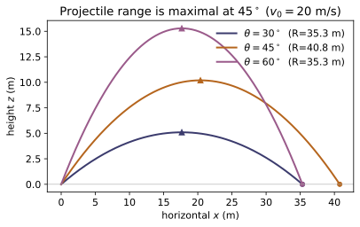
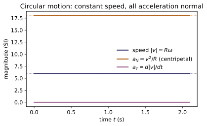
Example problems
A projectile is launched at speed v₀ and angle θ over level ground. Derive t_flight = 2v₀sinθ/g, R = v₀²sin2θ/g, and h_max = (v₀sinθ)²/2g, and show the range is maximal at θ = 45°. Check: range_(v0, θ), max_height(v0, θ), time_of_flight(v0, θ); confirm acceleration(projectile(v0, θ))(t) ≈ (0,0,−9.81) at several t.
Gravity gives the constant acceleration $\mathbf a=-g\,\hat{\mathbf z}$, so with launch velocity $\mathbf v_0=(v_0\cos\theta,\,0,\,v_0\sin\theta)$ the height is $z(t)=v_0\sin\theta\,t-\tfrac12 g t^2$. Setting $z=0$ gives the flight time $t_\text{flight}=2v_0\sin\theta/g$. The horizontal range is
At the apex ($t=t_\text{flight}/2$, $v_z=0$) the height is $h_\text{max}=(v_0\sin\theta)^2/2g$. Since $R\propto\sin2\theta$ is largest when $2\theta=90^\circ$, the range peaks at $\theta=45^\circ$. For $v_0=20,\ \theta=40^\circ$ this gives $R\approx40.155$ m, $h_\text{max}\approx8.424$ m, $t_\text{flight}\approx2.621$ s, matching range_, max_height, time_of_flight.
Starting from r = r ê_r and dê_r/dt = θ̇ ê_θ, dê_θ/dt = −θ̇ ê_r, derive v = ṙ ê_r + r θ̇ ê_θ and a = (r̈ − r θ̇²)ê_r + (r θ̈ + 2ṙ θ̇)ê_θ. Identify the centripetal and Coriolis terms. Check: polar_acceleration_components(rho, theta) for ρ(t)=R, θ(t)=ωt gives (−Rω², 0); for ρ(t)=1+t, θ(t)=t the Coriolis term gives a_θ = 2.
Differentiate $\mathbf r=r\,\hat{\mathbf e}_r$ using $\dot{\hat{\mathbf e}}_r=\dot\theta\,\hat{\mathbf e}_\theta$:
Differentiate again, now also using $\dot{\hat{\mathbf e}}_\theta=-\dot\theta\,\hat{\mathbf e}_r$:
The $-r\dot\theta^2$ in $a_r$ is the centripetal term; the $2\dot r\dot\theta$ in $a_\theta$ is the Coriolis term. For $\rho=R,\ \theta=\omega t$: $a_r=-R\omega^2,\ a_\theta=0$; for $\rho=1+t,\ \theta=t$: $a_\theta=2\dot r\dot\theta=2$, matching polar_acceleration_components.
Show that for any trajectory the radius of curvature is ρ = |v|³ / |v×a|, i.e. |v×a| = v³/ρ. (Hint: a = a_T T̂ + (v²/ρ) N̂, and v×T̂ = 0.) Check: for a circle of radius R, radius_of_curvature(circ)(t) ≈ R; for a straight line, curvature(line)(t) ≈ 0.
Write the acceleration in the tangential/normal (Frenet) basis, $\mathbf a=a_T\hat{\mathbf T}+(v^2/\rho)\hat{\mathbf N}$, and the velocity as $\mathbf v=v\,\hat{\mathbf T}$ with $v=|\mathbf v|$. Then
since $\hat{\mathbf T}\times\hat{\mathbf T}=\mathbf 0$. Taking magnitudes, $|\mathbf v\times\mathbf a|=v^3/\rho$, hence $\rho=|\mathbf v|^3/|\mathbf v\times\mathbf a|$ and $\kappa=1/\rho=|\mathbf v\times\mathbf a|/|\mathbf v|^3$. A circle of radius $R$ gives $\rho=R$ (so radius_of_curvature(circ)≈R); a straight line has $\mathbf a\parallel\mathbf v$, so $\mathbf v\times\mathbf a=\mathbf 0$ and $\kappa=0$.
For r(t) = (R cos ωt, R sin ωt, 0) show |v| = Rω is constant, the acceleration is a = −ω²r (points to the centre), and a_N = v²/R = Rω² with a_T = 0. Check: speed, normal_acceleration, tangential_acceleration, and acceleration(circ)(t) ≈ −ω² r(t).
Differentiate $\mathbf r=(R\cos\omega t,\,R\sin\omega t,\,0)$:
Differentiating again, $\mathbf a=(-R\omega^2\cos\omega t,\,-R\omega^2\sin\omega t,\,0)=-\omega^2\mathbf r$, which points from the particle straight back to the centre. Because the speed is constant, $a_T=d|\mathbf v|/dt=0$, so all of $\mathbf a$ is normal: $a_N=|\mathbf a|=R\omega^2=(R\omega)^2/R=v^2/R$. With $R=2,\ \omega=3$ the code gives $|\mathbf v|=6$, $a_N=18=R\omega^2$, $a_T\approx0$, and $\mathbf a=-9\,\mathbf r$.
~CM-09; Goldstein 3e §1.1, Eq. 1.7, p.2For the helix r(t) = (cos t, sin t, t): compute v, the specific angular momentum ℓ = r×v, and dℓ/dt. Is ℓ conserved? What does that say about whether the (would-be) force is central? Check: build v = velocity(r) and l = cross(r, v) (MA-01 cross on the velocity function); sample [l(t+h)−l(t)]/h and compare to cross(r, acceleration(r))(t).
For $\mathbf r=(\cos t,\sin t,t)$, $\mathbf v=\dot{\mathbf r}=(-\sin t,\cos t,1)$, so
Differentiating, $\dfrac{d\boldsymbol\ell}{dt}=(t\sin t,\ -t\cos t,\ 0)$, which equals $\mathbf r\times\mathbf a$ with $\mathbf a=\ddot{\mathbf r}=(-\cos t,-\sin t,0)$ (the $\dot{\mathbf r}\times\dot{\mathbf r}$ part vanishes, leaving only $\mathbf r\times\mathbf a$). Since $d\boldsymbol\ell/dt\neq\mathbf 0$, $\boldsymbol\ell$ is not conserved: there is a nonzero torque $\mathbf r\times\mathbf a$, so the would-be force is not central (a central force $\parallel\mathbf r$ would give $\mathbf r\times\mathbf a=\mathbf 0$). Sampling at $t=0.7$ gives $d\boldsymbol\ell/dt\approx(0.451,-0.535,0)$, equal to cross(r, acceleration(r))(0.7).
Run the worked code: cd CM/CM-01_kinematics/code && python3 kinematics.py
CM-02 — Equation of Motion
Classical Mechanics trunk · CM/CM-02_equation_of_motion · open in the Teaching Network
Newton's second law as the equation of motion m d²r/dt² = F(t, r, v), integrated to get the trajectory. The state [r, v] is handed to MA-07's RK4 integrator; a small library of forces (constant, gravity, spring, drag) plus sum_forces for free-body superposition.
Key equations
Figures
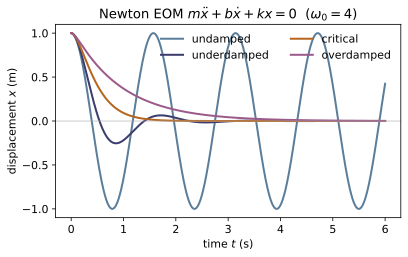
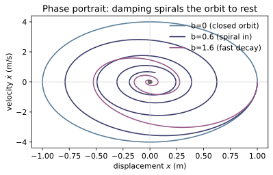
Example problems
Integrate mr″ = mg to get r(t) = r₀ + v₀t + ½gt² and confirm it matches the projectile of ~CM-01. Check: trajectory(uniform_gravity(m), m, …).
Newton's law $m\ddot{\mathbf r}=m\mathbf g$ cancels the mass, leaving $\ddot{\mathbf r}=\mathbf g$ (constant). Integrate once for $\dot{\mathbf r}=\mathbf v_0+\mathbf g\,t$ and again:
the same parabola as the ~CM-01 projectile. With $\mathbf g=(0,0,-9.81)$, $\mathbf v_0=(10,0,10)$, $\mathbf r_0=\mathbf 0$, $m=2$: $x(2)=20$ and $z(2)=10\cdot2-\tfrac12(9.81)(2)^2=0.38$. The RK4 trajectory(uniform_gravity(m), m, …) returns $\mathbf r(2)=(20.0,0,0.38)$, confirming the closed form.
For m x″ = −k x show x(t) = x₀cos(ωt) + (v₀/ω)sin(ωt), ω = √(k/m). Check: trajectory(spring_force(k), m, (1,0,0), (0,0,0), …) vs cos(ωt).
Dividing $m\ddot x=-kx$ by $m$ gives $\ddot x=-\omega^2 x$ with $\omega=\sqrt{k/m}$ — the SHM equation, whose general solution is $x(t)=A\cos\omega t+B\sin\omega t$. The initial conditions fix the constants: $x(0)=x_0\Rightarrow A=x_0$, and $\dot x(0)=v_0\Rightarrow B\omega=v_0$, i.e. $B=v_0/\omega$. Hence
With $x_0=1,\ v_0=0,\ k=8,\ m=0.5$ (so $\omega=4$) this reduces to $x(t)=\cos4t$; the integrator gives $x(5)=0.4081=\cos(4\cdot5)$, matching cos(ωt).
For falling with linear drag, m z″ = −mg − b z′, show the velocity approaches v∞ = −mg/b. Check: integrate sum_forces(uniform_gravity(m), linear_drag(b)).
Write the vertical equation in terms of $v=\dot z$: $m\dot v=-mg-bv$, i.e. $\dot v=-g-\frac{b}{m}v$. The motion stops accelerating when $\dot v=0$, which defines the terminal velocity
Solving the linear ODE gives $v(t)=v_\infty+(v_0-v_\infty)e^{-bt/m}$, so $v\to v_\infty$ as $t\to\infty$ for any $v_0$. Integrating sum_forces(uniform_gravity(m), linear_drag(b)) with $m=1,\ b=0.5$ yields $v_z\to-19.62=-mg/b$.
Show that a constant applied force exactly cancelling gravity gives zero net force, hence straight-line motion. Check: sum_forces(uniform_gravity(m), constant_force((0,0,mg))).
The net force is the vector sum of the two applied forces,
By Newton's second law $m\ddot{\mathbf r}=\mathbf F_\text{net}=\mathbf 0$, so $\ddot{\mathbf r}=\mathbf 0$ and the velocity is constant — the body moves in a straight line at constant speed (Newton's first law as the zero-force special case). sum_forces(uniform_gravity(m), constant_force((0,0,mg))) returns $(0,0,0)$ at every $(t,\mathbf r,\mathbf v)$.
Argue that internal forces in a two-body system cancel pairwise, so the total momentum is unaffected — the conservation law made explicit in ~CM-06.
Label the mutual forces $\mathbf F_{12}$ (on body 1 from body 2) and $\mathbf F_{21}$ (on body 2 from body 1). Newton's third law states $\mathbf F_{12}=-\mathbf F_{21}$. With no external forces each body obeys $\dot{\mathbf p}_1=\mathbf F_{12}$ and $\dot{\mathbf p}_2=\mathbf F_{21}$, so the total momentum evolves as
The internal forces cancel pairwise, leaving $\mathbf p_1+\mathbf p_2$ constant in time — exactly the momentum-conservation law developed in ~CM-06.
Run the worked code: cd CM/CM-02_equation_of_motion/code && python3 equation_of_motion.py
CM-03 — Reference Frames
Classical Mechanics trunk · CM/CM-03_reference_frames · open in the Teaching Network
Galilean transformations between inertial frames (r′ = r − Vt, v′ = v − V) and the centre-of-mass (C) frame, in which the total momentum is zero. Pure vector arithmetic.
Key equations
Figures
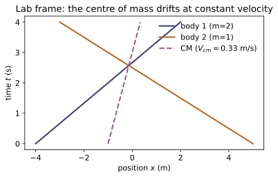
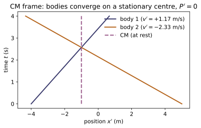
Example problems
A boat moves at u in the water; the water moves at V relative to the bank. Find the boat's velocity relative to the bank and relative to the water. Check: galilean_velocity.
Velocities add under a Galilean boost. The water moves at $\mathbf V$ relative to the bank and the boat moves at $\mathbf u$ relative to the water, so the boat's velocity in the bank frame is the sum
To get the boat's velocity relative to the water, boost into the water frame (which moves at $\mathbf V$): $\mathbf v'=\mathbf v_\text{boat/bank}-\mathbf V=\mathbf u$, recovering the original $\mathbf u$. This is exactly galilean_velocity(v, V) = v − V; e.g. galilean_velocity(u+V, V) returns $\mathbf u$.
Show vₐ − v_b is unchanged by a Galilean boost (both velocities shift by the same V). Check: compare relative_velocity(va, vb) before and after galilean_velocity(·, V).
Under a Galilean boost by $\mathbf V$, every velocity shifts the same way: $\mathbf v_a'=\mathbf v_a-\mathbf V$ and $\mathbf v_b'=\mathbf v_b-\mathbf V$. Their difference is therefore
so the relative velocity is independent of the (inertial) frame — the common boost $\mathbf V$ cancels. Numerically, relative_velocity(va, vb) returns $(2,0,0)$ both before and after boosting each velocity by galilean_velocity(·, V).
For two bodies m=[2,1] with v=[(1,0,0),(−2,0,0)], find V_cm. Check: cm_velocity([2,1], [[1,0,0],[-2,0,0]]) → (0,0,0): the CM is at rest here.
The centre-of-mass velocity is the momentum-weighted average $\mathbf V_\text{cm}=\frac{\sum_i m_i\mathbf v_i}{\sum_i m_i}$. With $m=[2,1]$ and $\mathbf v=[(1,0,0),(-2,0,0)]$ the total momentum is
and $\sum_i m_i=3$, so $\mathbf V_\text{cm}=(0,0,0)/3=(0,0,0)$ — the heavier body's rightward momentum exactly cancels the lighter body's leftward momentum, leaving the CM at rest. cm_velocity([2,1], [[1,0,0],[-2,0,0]]) returns $(0,0,0)$.
Show that subtracting V_cm from every velocity makes the total momentum zero. Check: total_momentum(masses, to_cm_frame(masses, vels)) ≈ 0 for random systems.
Boosting into the C-frame subtracts $\mathbf V_\text{cm}$ from every velocity: $\mathbf v_i'=\mathbf v_i-\mathbf V_\text{cm}$. The total momentum measured there is
using $\mathbf V_\text{cm}=\mathbf P/M$. So the centre-of-mass frame is precisely the zero-momentum frame, which is why collisions are simplest there (~CM-08). Hence total_momentum(masses, to_cm_frame(masses, vels)) returns $\approx\mathbf 0$ for any system.
~RE-01Galilean addition gives u + V with no upper bound. State qualitatively why this cannot hold for light and what replaces it (the Lorentz transformation, ~RE-03).
Galilean addition $\mathbf u+\mathbf V$ has no ceiling, so it predicts that a light pulse measured at speed $c$ in one frame would travel at $c-V$ in a frame moving alongside it. Experiment (Michelson–Morley) instead finds the speed of light $c$ to be identical in every inertial frame, contradicting the unbounded rule. The fix is to replace the Galilean boost with the Lorentz transformation (~RE-03), whose velocity-addition law
never exceeds $c$ yet reduces to $u+V$ when $u,V\ll c$ — recovering Galilean relativity as the low-speed limit.
Run the worked code: cd CM/CM-03_reference_frames/code && python3 reference_frames.py
CM-04 — Work & Energy
Classical Mechanics trunk · CM/CM-04_work_energy · open in the Teaching Network
Kinetic energy T = ½m|v|², the work integral W = ∫F·dl (reusing MA-02's line_integral), and the work–energy theorem W = ΔT.
Key equations
Figures
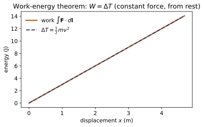
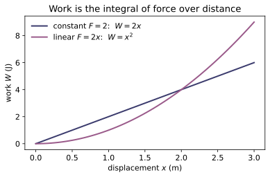
Example problems
Show that for a constant force the work is W = F·d (displacement), path detail irrelevant. Check: work(lambda x,y,z:F, straight_path, 0, 1).
For a constant force $\mathbf F$ the work integral factors out the force, leaving only the net displacement:
Because only the endpoints $\mathbf a,\mathbf b$ enter, the path taken between them is irrelevant. With $\mathbf F=(2,0,0)$ pushed straight from the origin to $(5,0,0)$, $W=2\times5=10$ J, exactly what work(lambda x,y,z:F, straight_path, 0, 1) returns.
For a particle from rest under a constant force, integrate the work along its actual path and show it equals ΔT = ½mv². Check: compare work(...) to kinetic_energy(m, vT).
Newton's law $\mathbf F=m\,d\mathbf v/dt$ dotted with $d\mathbf l=\mathbf v\,dt$ turns the integrand into a perfect differential:
Starting from rest ($v_a=0$), $W=\tfrac12 m v^2$. With $F_0=3,\ m=2$ the acceleration is $a=F_0/m=1.5$, so after $T=2$ the speed is $v=aT=3$; integrating the work gives $W=9.000$, equal to $\tfrac12 m v^2=\tfrac12(2)(3^2)=9$ from kinetic_energy(m, vT).
Show that lowering a mass m by height h releases W = mgh, independent of the path. Check: work(lambda x,y,z:(0,0,-m*g), drop_path, 0, 1) ≈ mgh.
Take constant gravity $\mathbf F=(0,0,-mg)$ and lower the mass from $z=0$ to $z=-h$, a displacement $\mathbf d=(0,0,-h)$ (plus any horizontal wandering). Since $\mathbf F$ is constant the work is path-independent (P1):
and horizontal motion contributes nothing because $\mathbf F$ has no $x,y$ component. For $m=3,\ g=9.81,\ h=4$ this gives $W=mgh=117.72$ J, matching work(lambda x,y,z:(0,0,-m*g), drop_path, 0, 1).
For uniform circular motion the centripetal force is perpendicular to v, so P = F·v = 0 — it does no work and the speed is constant. Confirm with a centripetal force and a tangential velocity. Check: power(F_radial, v_tangential).
In uniform circular motion the centripetal force points radially inward, along $-\hat{\mathbf r}$, while the velocity is tangential, along $\hat{\boldsymbol\theta}$; the two are orthogonal, $\hat{\mathbf r}\cdot\hat{\boldsymbol\theta}=0$. Hence the instantaneous power is
No power means no work is done, so by the work–energy theorem $\Delta T=0$ and the speed stays constant — the force only turns $\mathbf v$, it never lengthens it. With a radial $\mathbf F$ and perpendicular $\mathbf v$, power(F_radial, v_tangential) returns $0$.
~CM-03Compute T for a particle in the lab frame and in the centre-of-mass frame and note they differ — kinetic energy is not a Galilean invariant (work is, between the same two states). Check: kinetic_energy with velocities from to_cm_frame.
Kinetic energy depends on velocity, which shifts by the boost $\mathbf V$ between frames, $\mathbf v'=\mathbf v-\mathbf V$. For a system, König's theorem splits the lab kinetic energy into a bulk part plus an internal part:
Thus $T_\text{lab}=T_\text{cm}+\tfrac12 M|\mathbf V_\text{cm}|^2>T_\text{cm}$ whenever the centre of mass moves — kinetic energy is not Galilean-invariant. Feeding lab velocities, then their to_cm_frame images, into kinetic_energy returns these two different numbers, differing by exactly $\tfrac12 M|\mathbf V_\text{cm}|^2$.
Run the worked code: cd CM/CM-04_work_energy/code && python3 work_energy.py
CM-05 — Conservative Forces & Potential Energy
Classical Mechanics trunk · CM/CM-05_potential_energy · open in the Teaching Network
The conservative force F = −∇U, the curl test for conservativeness, the total mechanical energy E = T + U, and the stability of equilibria (minima of U). Reuses MA-02's gradient/curl and MA-01's dot.
Key equations
Figures
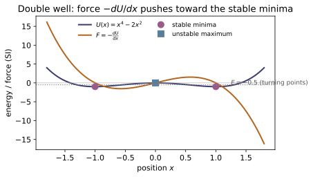
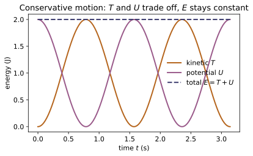
Example problems
For U = ½k r² show F = −∇U = −kr (an isotropic spring). Check: force_from_potential(lambda x,y,z: 0.5k(xx+yy+z*z)).
Write $U=\tfrac12 k r^2=\tfrac12 k(x^2+y^2+z^2)$ and take the gradient componentwise: $\partial_x U=kx$, $\partial_y U=ky$, $\partial_z U=kz$, i.e. $\nabla U=k(x,y,z)=k\mathbf r$. Therefore
an isotropic Hooke's-law spring pulling toward the origin with magnitude $kr$. For $k=3$ at $(1,2,3)$ this is $(-3,-6,-9)=-k\mathbf r$, exactly what force_from_potential(lambda x,y,z: 0.5k(xx+yy+z*z)) returns.
Show F = −kr has zero curl (conservative) while F = (−y, x, 0) has curl (0,0,2) (not conservative). Check: is_conservative.
For $\mathbf F=-k\mathbf r=(-kx,-ky,-kz)$ each component depends only on its own coordinate, so every cross-partial in the curl vanishes and $\nabla\times\mathbf F=\mathbf 0$ — conservative. For $\mathbf F=(-y,x,0)$,
so it circulates and is not conservative. Accordingly is_conservative returns True for $-k\mathbf r$ and False for $(-y,x,0)$.
For x(t) = A cos(ωt), ω = √(k/m), show E = T + U = ½kA² is constant. Check: total_energy(m, v(t), U, r(t)) at several t.
With $x(t)=A\cos\omega t$ and $\omega=\sqrt{k/m}$ (so $m\omega^2=k$), the velocity is $\dot x=-A\omega\sin\omega t$. Then
Adding and using $\sin^2+\cos^2=1$, $E=T+U=\tfrac12 kA^2$, independent of $t$. For $k=4,\ A=1$ this is $E=2$, and total_energy(m, v(t), U, r(t)) returns $2.0$ at every sampled time.
For U = x⁴ − 2x² find the equilibria and classify them. Answer: minima at x=±1 (stable), maximum at x=0 (unstable). Check: is_equilibrium, is_stable.
Equilibria satisfy $U'(x)=0$. With $U=x^4-2x^2$,
Classify with $U''(x)=12x^2-4$: $U''(\pm1)=8>0$ (minima, stable) and $U''(0)=-4<0$ (maximum, unstable). So $x=\pm1$ are stable wells and $x=0$ an unstable hilltop, matching is_equilibrium (True at all three) and is_stable (True, False, True at $-1,0,1$).
~CM-15Expand U about a stable minimum x₀: U ≈ U(x₀) + ½U″(x₀)(x−x₀)². Identify the effective spring constant k = U″(x₀) and the frequency ω = √(k/m).
At a stable minimum $x_0$ the force vanishes, $U'(x_0)=0$, so the Taylor expansion has no linear term:
This is the harmonic potential $\tfrac12 k(x-x_0)^2$ with effective spring constant $k=U''(x_0)>0$; the force $F=-U'(x)\approx-k(x-x_0)$ is restoring, and $m\ddot x=-k(x-x_0)$ is simple harmonic motion at $\omega=\sqrt{k/m}=\sqrt{U''(x_0)/m}$. For the double well at $x_0=1$, $k=U''(1)=8$, so $\omega=\sqrt{8/m}$ — the bridge to ~CM-15.
Run the worked code: cd CM/CM-05_potential_energy/code && python3 potential_energy.py
CM-06 — Linear Momentum
Classical Mechanics trunk · CM/CM-06_linear_momentum · open in the Teaching Network
Linear momentum p = mv, total momentum of a system, the impulse J = ∫F dt (= Δp), and conservation of total momentum (Newton's third law). Pure stdlib.
Key equations
Figures
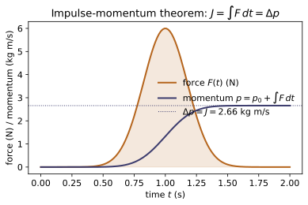
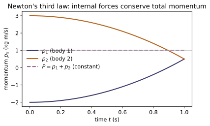
Example problems
For a particle under a constant force F over time Δt, show J = FΔt = Δp. Check: impulse(lambda t:F, 0, dt) vs momentum(m, vT) − momentum(m, v0).
Newton's second law in momentum form is $\mathbf F=d\mathbf p/dt$, so integrating over the interval gives the impulse–momentum theorem:
For a constant force the integral is simply $\mathbf F\,\Delta t$, hence $\mathbf J=\mathbf F\,\Delta t=\Delta\mathbf p$. In code, impulse(lambda t:F, 0, dt) equals $m\mathbf v_T-m\mathbf v_0=$ momentum(m, vT) − momentum(m, v0).
For F(t) = (t, 0, 0), compute the impulse over [0, 2] (= (2,0,0)). Check: impulse(lambda t:(t,0,0), 0, 2).
Only the $x$-component of $\mathbf F(t)=(t,0,0)$ is nonzero, so
Thus $\mathbf J=(2,0,0)$, exactly the trapezoidal value returned by impulse(lambda t:(t,0,0), 0, 2).
Show that equal-and-opposite internal forces give zero net impulse on the system, so total momentum is conserved. Check: impulse(f) + impulse(-f) = 0.
By Newton's third law the internal forces act in equal-and-opposite pairs $\mathbf f_{21}=-\mathbf f_{12}$ over the same interval, so their impulses cancel:
Hence the net internal impulse is zero, and $\Delta\mathbf P=\mathbf J^{\rm(ext)}$; with no external force $\mathbf P$ is conserved. In code impulse(f) + impulse(-f) = 0 componentwise (the demo prints $[0,0,0]$).
A stationary body of mass M splits into m₁ and m₂. Use ΣP = 0 to relate their velocities (m₁v₁ = −m₂v₂). Check: total_momentum([m1,m2],[v1,v2]) ≈ 0.
The body starts at rest, so $\mathbf P_\text{initial}=\mathbf 0$; with no external force $\mathbf P$ is conserved, so after the split
The fragments recoil back-to-back with momenta of equal magnitude and opposite direction; the lighter one moves faster, $|\mathbf v_1|/|\mathbf v_2|=m_2/m_1$. For any such pair total_momentum([m1,m2],[v1,v2]) $\approx(0,0,0)$.
Explain how a rocket accelerates with no external force by ejecting mass backward (the system's total momentum is conserved; the rocket gains what the exhaust loses).
Treat rocket + exhaust as one isolated system, so the total momentum is conserved even though the rocket accelerates. In time $dt$ a rocket of mass $m$ ejects $dm_\text{ex}$ of exhaust at velocity $u$ backward relative to the rocket; momentum balance $m\,dv=u\,dm_\text{ex}$ supplies the forward thrust. Integrating $m\,dv=-u\,dm$ (with $dm=-dm_\text{ex}$ the rocket's mass loss) gives the Tsiolkovsky equation
The forward momentum the rocket gains exactly equals the backward momentum carried off by the exhaust, so $\mathbf P_\text{total}$ never changes — propulsion with no external force.
Run the worked code: cd CM/CM-06_linear_momentum/code && python3 linear_momentum.py
CM-07 — Centre of Mass
Classical Mechanics trunk · CM/CM-07_centre_of_mass · open in the Teaching Network
The centre of mass of a system, its velocity, the reduced mass of a two-body problem, and the CM/relative decomposition. Pure stdlib.
Key equations
Figures
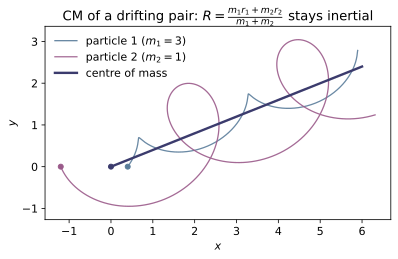
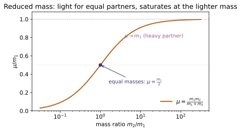
Example problems
Find the CM of m₁ at the origin and m₂ at distance d. Answer: a distance m₂d/(m₁+m₂) from m₁. Check: centre_of_mass([3,1], [[0,0,0],[4,0,0]]) → (1,0,0).
Put $m_1$ at the origin and $m_2$ at $\mathbf d$. The mass-weighted average position is
a distance $m_2 d/(m_1+m_2)$ from $m_1$ along the line to $m_2$ — always pulled toward the heavier body. For $m_1=3,\ m_2=1,\ \mathbf d=(4,0,0)$: $\mathbf R=\tfrac14(4,0,0)=(1,0,0)$, exactly centre_of_mass([3,1], [[0,0,0],[4,0,0]]).
Argue from P = MV that, with no external force, the CM velocity is constant — internal forces cannot accelerate it. Check: cm_velocity is invariant under internal interactions.
The total momentum is $\mathbf P=\sum_i m_i\mathbf v_i=M\mathbf V$ with $M=\sum_i m_i$, so $\mathbf V=\mathbf P/M$. Differentiating,
because internal forces cancel pairwise (Newton's third law). With $\mathbf F^{\rm(ext)}=\mathbf 0$ we get $\dot{\mathbf V}=\mathbf 0$: the CM glides at constant velocity, and internal interactions only shuffle momentum among the parts. Hence cm_velocity is invariant under internal interactions.
Show μ = m/2 for equal masses and μ → m₁ when m₂ ≫ m₁ (e.g. Earth–Sun). Check: reduced_mass(2,2)=1, reduced_mass(1,1e12)≈1.
From $\mu=\dfrac{m_1 m_2}{m_1+m_2}$: equal masses $m_1=m_2=m$ give $\mu=\dfrac{m^2}{2m}=\dfrac m2$. For $m_2\gg m_1$, divide numerator and denominator by $m_2$:
The reduced mass collapses onto the lighter body (e.g. essentially Earth's mass in Earth–Sun). So reduced_mass(2,2)=1 and reduced_mass(1,1e12)≈1.
Show the relative coordinate r = r₁ − r₂ obeys μr̈ = F₁₂ — a single particle of mass μ in the interaction force. Check: two_body_decompose.
Write Newton's law for each particle, $m_1\ddot{\mathbf r}_1=\mathbf F_{12}$ and $m_2\ddot{\mathbf r}_2=\mathbf F_{21}=-\mathbf F_{12}$, then subtract after dividing by the masses:
Since $\mathbf r=\mathbf r_1-\mathbf r_2$, this is $\mu\ddot{\mathbf r}=\mathbf F_{12}$ — a single fictitious particle of mass $\mu$ driven by the interaction force. Together with the free CM motion (P2), two_body_decompose returns the pair $(\mathbf R,\mathbf r)$ in which the problem separates (→ ~CM-11).
Three equal masses at (0,0,0), (3,0,0), (0,3,0): find the CM. Check: centre_of_mass([1,1,1], [[0,0,0],[3,0,0],[0,3,0]]) → (1,1,0).
With three equal masses the CM is the plain average (centroid) of the positions:
The equal weights make the mass-weighted average reduce to the geometric centroid of the triangle. This matches centre_of_mass([1,1,1], [[0,0,0],[3,0,0],[0,3,0]]) → (1,1,0).
Run the worked code: cd CM/CM-07_centre_of_mass/code && python3 centre_of_mass.py
CM-08 — Collisions & Scattering
Classical Mechanics trunk · CM/CM-08_collisions · open in the Teaching Network
One-dimensional elastic and inelastic collisions (conserving momentum, and — for elastic — kinetic energy), the centre-of-mass connection, and Rutherford scattering (the angle–impact-parameter relation and the differential cross-section). Reuses ~CM-07 (cm_velocity, reduced_mass).
Key equations
Figures
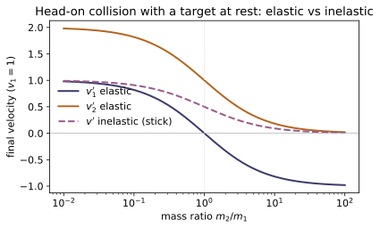
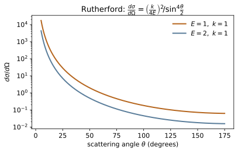
Example problems
Derive the 1-D elastic final velocities and verify both momentum and kinetic energy are conserved. Check: elastic_collision_1d for several mass ratios.
Momentum and kinetic-energy conservation read $m_1v_1+m_2v_2=m_1v_1'+m_2v_2'$ and $m_1v_1^2+m_2v_2^2=m_1v_1'^2+m_2v_2'^2$. Writing each as $m_1(v_1-v_1')=m_2(v_2'-v_2)$ and $m_1(v_1^2-v_1'^2)=m_2(v_2'^2-v_2^2)$ and dividing gives $v_1+v_1'=v_2+v_2'$, i.e. the relative velocity reverses, $v_1'-v_2'=-(v_1-v_2)$. Solving this together with momentum conservation,
Substituting back confirms both $p$ and $T$ are unchanged, which is what elastic_collision_1d returns for every mass ratio (e.g. a light ball off a wall, $m_2\to\infty$, gives $v_1'\to-v_1$).
Show m₁ = m₂ gives v₁′ = v₂, v₂′ = v₁. Check: elastic_collision_1d(2,5,2,-1) → (−1,5).
Put $m_1=m_2=m$ in the elastic formulas; the differences $m_1-m_2$ and $m_2-m_1$ vanish, leaving
So equal masses simply exchange velocities. With $m_1=m_2=2$, $v_1=5$, $v_2=-1$ this gives $v_1'=-1$, $v_2'=5$, i.e. elastic_collision_1d(2,5,2,-1) $\to(-1,5)$.
Show the common final velocity is the CM velocity and that kinetic energy is lost. Check: inelastic_collision(2,[4,0,0],1,[0,0,0]) and compare T before/after.
Sticking means a single final velocity $v'$; momentum conservation $(m_1+m_2)v'=m_1v_1+m_2v_2$ gives
exactly the centre-of-mass velocity (~CM-07). The kinetic energy drops by $T_i-T_f=\tfrac12\mu(v_1-v_2)^2$ with reduced mass $\mu=m_1m_2/(m_1+m_2)$. For $m=[2,1]$, $v_1=4$, $v_2=0$: $v'=8/3\approx2.667=v_\text{cm}$, and $T_i=16\to T_f=\tfrac12(3)(8/3)^2=32/3$, a loss of $16/3\approx5.333$ — matching inelastic_collision(2,[4,0,0],1,[0,0,0]) and the before/after kinetic energies.
Invert θ = 2 arctan(k/2Eb) to b = (k/2E)cot(θ/2); for b = k/2E show θ = 90°. Check: rutherford_angle(0.5, 1, 1) → π/2 and the inverse relation.
Halving and taking the tangent of $\theta=2\arctan\!\frac{k}{2Eb}$ gives $\tan\frac\theta2=\frac{k}{2Eb}$, so
At the special value $b=k/2E$ this forces $\tan(\theta/2)=1$, i.e. $\theta/2=45^\circ$ and $\boxed{\theta=90^\circ}$. With $k=E=1$ and $b=0.5=k/2E$, rutherford_angle(0.5, 1, 1) returns $\pi/2$, confirming the inverse relation.
Show dσ/dΩ = (k/4E)²/sin⁴(θ/2) → ∞ as θ → 0, and explain why (the Coulomb force has infinite range, so even far-off particles deflect a little). Check: rutherford_cross_section(small, E, k) grows without bound.
As $\theta\to0$, $\sin(\theta/2)\approx\theta/2\to0$, so
Physically the Coulomb force $\propto1/r^2$ has infinite range: particles incident at arbitrarily large impact parameter are still deflected by a small angle, and since $b=(k/2E)\cot(\theta/2)\to\infty$ as $\theta\to0$, an unbounded range of $b$ piles up into the forward direction. Hence rutherford_cross_section(small, E, k) grows without bound (e.g. $\approx1.08\times10^7$ at $\theta=1^\circ$ versus $0.25$ at $90^\circ$).
Run the worked code: cd CM/CM-08_collisions/code && python3 collisions.py
CM-09 — Angular Momentum & Torque
Classical Mechanics trunk · CM/CM-09_angular_momentum · open in the Teaching Network
Angular momentum L = r × p, torque N = r × F, the rotational equation of motion dL/dt = N, and the central-force conservation law (N = 0 when F ∥ r). Reuses MA-01's cross and CM-01's velocity/acceleration.
Key equations
Figures
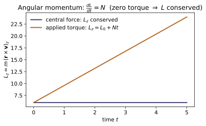
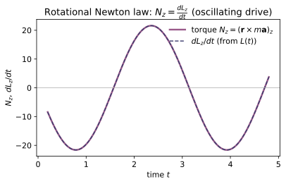
Example problems
Compute L = mr×v for m=2, r=(1,0,0), v=(0,3,0), and the torque of F=(0,5,0) at r=(2,0,0). Check: angular_momentum, torque.
The cross products are
For the torque, $\mathbf N=\mathbf r\times\mathbf F=(2,0,0)\times(0,5,0)=(0,0,10)$. Both point along $+\hat{\mathbf z}$ (right-hand rule for motion/force in the $xy$-plane), giving $\mathbf L=(0,0,6)$ and $\mathbf N=(0,0,10)$ — exactly angular_momentum(2,(1,0,0),(0,3,0)) and torque((2,0,0),(0,5,0)).
Show N = r × F = 0 whenever F ∥ r. Check: torque((2,1,0), (-4,-2,0)) → (0,0,0).
"Central" means the force is parallel to the radius vector, $\mathbf F=\lambda\,\mathbf r$ for some scalar $\lambda$. Then
since any vector crossed with itself vanishes. Here $\mathbf F=(-4,-2,0)=-2\,(2,1,0)=-2\,\mathbf r$ is (anti)parallel to $\mathbf r$, so torque((2,1,0), (-4,-2,0)) $\to(0,0,0)$.
For any trajectory, show dL/dt = mr×a = N. Check: numerically differentiate angular_momentum_of(m, traj) and compare to torque_rate(m, traj).
Differentiate $\mathbf L=m(\mathbf r\times\mathbf v)$ with the product rule:
using $\mathbf v\times\mathbf v=\mathbf 0$ and Newton's law $\mathbf F=m\mathbf a$. So torque is the rate of change of angular momentum. Numerically, for $\mathbf r(t)=(t,t^2,\sin t)$ and $m=2$ at $t=0.7$, both the finite difference of angular_momentum_of(m, traj) and torque_rate(m, traj) give $(-3.208,\,0.902,\,2.800)$.
For r(t) = (R cos ωt, R sin ωt, 0) show L = m R²ω ẑ is constant. Check: angular_momentum_of at several t.
With $\mathbf r=(R\cos\omega t,R\sin\omega t,0)$ and $\mathbf v=\dot{\mathbf r}=(-R\omega\sin\omega t,R\omega\cos\omega t,0)$, only the $z$-component of $\mathbf r\times\mathbf v$ survives:
Hence $\mathbf L=m(\mathbf r\times\mathbf v)=mR^2\omega\,\hat{\mathbf z}$, independent of $t$. With $R=2,\ \omega=3,\ m=1.5$ this is $(0,0,18)$ at every sample time, as angular_momentum_of confirms — constant because the centripetal force is central.
Show that constant L implies the radius vector sweeps equal areas in equal times (dA/dt = L/2m). This is the conservation law underlying ~CM-11.
In time $dt$ the radius vector sweeps a thin triangle of area $dA=\tfrac12|\mathbf r\times d\mathbf r|=\tfrac12|\mathbf r\times\mathbf v|\,dt$. Therefore
since $\mathbf L=m(\mathbf r\times\mathbf v)$. When the force is central, $\mathbf L$ is conserved (P2), so $dA/dt=L/2m$ is constant: the radius vector sweeps equal areas in equal times — Kepler's second law, the conservation law underlying the orbit problem ~CM-11.
Run the worked code: cd CM/CM-09_angular_momentum/code && python3 angular_momentum.py
CM-10 — Centripetal & Circular Motion
Classical Mechanics trunk · CM/CM-10_circular_motion · open in the Teaching Network
Uniform circular motion and the centripetal acceleration a = v²/R = ω²R, period and frequency, and the cross-check against ~CM-01's general curvature (a circle has curvature 1/R and inward acceleration v²/R).
Key equations
Figures
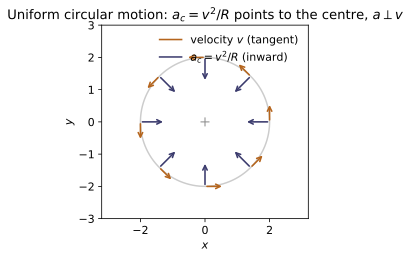
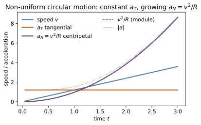
Example problems
For uniform circular motion show a_c = v²/R = ω²R, directed toward the centre. Check: centripetal_acceleration(R*omega, R) = ω²R; acceleration(uniform_circular(R,omega))(t) ≈ −ω²r.
Write the trajectory $\mathbf r(t)=R(\cos\omega t,\sin\omega t,0)$ and differentiate twice:
The speed $v=|\dot{\mathbf r}|=R\omega$ is constant, and the acceleration points opposite $\mathbf r$ (inward) with magnitude
For $R=2,\omega=3$ this is $\omega^2R=18$, exactly centripetal_acceleration(6, 2), while acceleration(uniform_circular(R,omega))(t)$=-\omega^2\mathbf r$.
Relate T, f, and ω: T = 2π/ω, f = 1/T. Check: period, frequency, angular_velocity round-trip.
The position $\mathbf r(t)=R(\cos\omega t,\sin\omega t,0)$ repeats when the phase $\omega t$ advances by $2\pi$, i.e. after one period $T=2\pi/\omega$. The frequency is $f=1/T=\omega/2\pi$, and inverting, $\omega=2\pi/T=2\pi f$. The three converters are mutual inverses, so for $\omega=3$: $T=2\pi/3\approx2.0944$, $f\approx0.4775$, and angular_velocity(period(3)) round-trips back to $3.0$.
~CM-01Show a circle of radius R has curvature κ = 1/R, so a_N = v²/R = κv². Check: curvature(uniform_circular(2,3))(t) → 0.5.
Parameterize by arc length $s=R\theta$; the unit tangent $\hat{\mathbf T}$ turns through $d\theta=ds/R$, so the curvature is $\kappa=|d\hat{\mathbf T}/ds|=1/R$. The normal (centripetal) acceleration is then $a_N=v^2\kappa=v^2/R$. For $R=2$ this gives $\kappa=\tfrac12$, which is why curvature(uniform_circular(2,3))(t)$\to0.5$ (the code returns $0.49999\ldots$ from finite differencing).
A mass on a string sweeps a horizontal circle. Use F_c = m v²/R supplied by the horizontal component of the tension to find the angle vs. speed. Check: centripetal_force(m, v, R) against the tension component.
Let the string make angle $\theta$ with the vertical and carry tension $\mathbf T$. Vertically the bob is in equilibrium, $T\cos\theta=mg$; horizontally the inward component supplies the centripetal force, $T\sin\theta=\dfrac{mv^2}{R}=F_c$. Dividing the two,
The horizontal tension component equals centripetal_force(m, v, R)$=mv^2/R$ (e.g. $m=1,v=2,R=2\Rightarrow2.0$).
A car rounds a curve of radius R at speed v; find the banking angle for which no friction is needed (tan θ = v²/gR = a_c/g). Check: centripetal_acceleration(v,R)/g.
On a frictionless bank only gravity $mg$ (down) and the normal force $\mathbf N$ (perpendicular to the road) act. Vertical balance $N\cos\theta=mg$ and the horizontal (centripetal) equation $N\sin\theta=mv^2/R$ divide to give
The required bank depends only on $a_c/g$, i.e. centripetal_acceleration(v,R)/g.
Run the worked code: cd CM/CM-10_circular_motion/code && python3 circular_motion.py
CM-11 — Central-Force Motion
Classical Mechanics trunk · CM/CM-11_central_force · open in the Teaching Network
The reduction of a central-force problem to a 1-D radial motion in the effective potential U_eff(r) = U(r) + L²/(2μr²), the circular orbit, Kepler's laws, and a numerically integrated orbit (reusing MA-07) that conserves energy and angular momentum.
Key equations
Figures
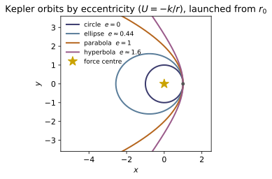
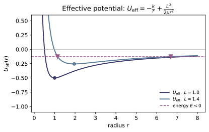
Example problems
For U = −k/r show U_eff(r) = −k/r + L²/(2μr²) has a single minimum at r₀ = L²/(μk) — the circular orbit. Check: effective_potential derivative at circular_orbit_radius. Answer: $r_0=L^2/(\mu k)$; it is a minimum since $U_{\rm eff}''(r_0)=k/r_0^3>0$.
Differentiate $U_{\rm eff}(r)=-\dfrac{k}{r}+\dfrac{L^2}{2\mu r^2}$ and set the slope to zero:
the only stationary point for $r>0$. Its character follows from the curvature, using $L^2=\mu k r_0$:
So $U_{\rm eff}$ has a single, stable minimum at $r_0$ — the circular orbit. Numerically effective_potential has slope $U_{\rm eff}'(r_0)\approx-2.8\times10^{-11}\approx0$ at circular_orbit_radius, confirming the extremum.
Show T² = (4π²μ/k) a³, so T²/a³ is the same for every orbit. Check: kepler_period(a, μ, k) for several a. Answer: $T^2/a^3=4\pi^2\mu/k$, a constant; for $\mu=k=1$ it is $4\pi^2\approx39.478$.
On a circular orbit of radius $a$ the inward force supplies the centripetal acceleration, $\dfrac{k}{a^2}=\mu\dfrac{v^2}{a}$, so $v^2=\dfrac{k}{\mu a}$. The period is the circumference over the speed,
Squaring gives Kepler III,
independent of $a$. With $\mu=k=1$, kepler_period returns $T^2/a^3=4\pi^2=39.4784$ for both $a=1$ and $a=4$.
Integrate a bound orbit and confirm E = ½μ|v|² + U(r) and L_z = μ(x v_y − y v_x) are constant. Check: compute both along orbit(...). Answer: both are constant — $E$ because a central force does work only through $dr$, and $L_z$ because the torque $\mathbf r\times\mathbf F$ vanishes when $\mathbf F\parallel\hat{\mathbf r}$.
A central force is $\mathbf F=f(r)\hat{\mathbf r}=-\dfrac{dU}{dr}\hat{\mathbf r}$. Differentiating the energy and using $\mu\dot{\mathbf v}=\mathbf F$ and $\mathbf v\cdot\hat{\mathbf r}=\dot r$,
For angular momentum the torque is $\boldsymbol\tau=\mathbf r\times\mathbf F=f(r)\,(\mathbf r\times\hat{\mathbf r})=0$, so $\dot{\mathbf L}=0$ and $L_z=\mu(x\dot y-y\dot x)$ is fixed. Along the integrated bound orbit ($v=0.8\,v_c$) both $E$ and $L_z$ hold to $\sim10^{-4}$, and $E<0$ confirms a bound ellipse.
For the circular orbit show the speed is v = √(k/(μr₀)) and that starting with this tangential speed keeps r constant. Check: integrate with v = L/(μr₀). Answer: $v=\sqrt{k/(\mu r_0)}=L/(\mu r_0)$; for $k=\mu=r_0=1$ this is $v=1$ and $r$ stays at $1$.
On the circular orbit the acceleration is purely centripetal, $a_r=-v^2/r_0$, and the only radial force is $F_r=-k/r_0^2$. Newton's radial law $\mu a_r=F_r$ gives
The motion is tangential, so $L=\mu v r_0$; with $r_0=L^2/(\mu k)$ one checks $v=L/(\mu r_0)=\sqrt{\mu k r_0}/(\mu r_0)=\sqrt{k/(\mu r_0)}$ — the same speed. Launching from $(r_0,0)$ with velocity $(0,v)$ therefore keeps the radius fixed: for $k=\mu=r_0=1$ the integrator holds $r\in[1.0000,1.0000]$.
Argue from the sign of E whether the orbit is an ellipse (E<0), parabola (E=0), or hyperbola (E>0). Check: integrate orbits with v below/at/above escape speed. Answer: the sign of $E=\tfrac12\mu v^2-k/r$ decides: $E<0$ ellipse, $E=0$ parabola (at $v=v_{\rm esc}=\sqrt{2k/\mu r}$), $E>0$ hyperbola.
Because $U=-k/r\to0$ as $r\to\infty$, the energy far away is $E=\tfrac12\mu v_\infty^2$. The particle can reach infinity only if it still has $v_\infty^2=2E/\mu\ge0$, i.e. $E\ge0$:
The threshold $E=0$ at radius $r$ defines the escape speed,
Starting at $r=1$ with $\mu=k=1$ ($v_{\rm circ}=1$, $v_{\rm esc}=\sqrt2$): integrating with $v<v_{\rm esc}$ gives $E<0$ (a bound ellipse, as in the conservation test), $v=v_{\rm esc}$ gives $E=0$ (parabola), and $v>v_{\rm esc}$ gives $E>0$ (an escaping hyperbola).
Run the worked code: cd CM/CM-11_central_force/code && python3 central_force.py
CM-12 — Non-inertial (Rotating) Frames
Classical Mechanics trunk · CM/CM-12_rotating_frames · open in the Teaching Network
The fictitious accelerations in a frame rotating at angular velocity ω: the centrifugal −ω×(ω×r) and the Coriolis −2ω×v (plus the Euler term when ω changes). Reuses MA-01's cross.
Key equations
Figures
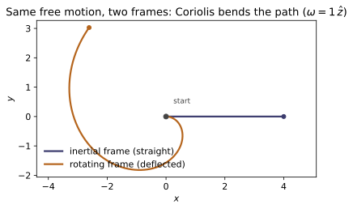
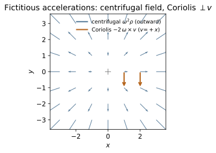
Example problems
For ω = ωẑ show −ω×(ω×r) = ω²ρ (outward, ρ the perpendicular displacement). Check: centrifugal_acceleration((0,0,w), (x,y,0)) = (w²x, w²y, 0). Answer: $-\boldsymbol\omega\times(\boldsymbol\omega\times\mathbf r)=\omega^2\mathbf r-\boldsymbol\omega(\boldsymbol\omega\cdot\mathbf r)=\omega^2\boldsymbol\rho$, outward with magnitude $\omega^2\rho$.
Apply the BAC–CAB identity $\mathbf a\times(\mathbf b\times\mathbf c)=\mathbf b(\mathbf a\cdot\mathbf c)-\mathbf c(\mathbf a\cdot\mathbf b)$:
so $-\boldsymbol\omega\times(\boldsymbol\omega\times\mathbf r)=\omega^2\mathbf r-\boldsymbol\omega(\boldsymbol\omega\cdot\mathbf r)=\omega^2\boldsymbol\rho$, where $\boldsymbol\rho=\mathbf r-(\hat{\boldsymbol\omega}\cdot\mathbf r)\hat{\boldsymbol\omega}$ is the part of $\mathbf r$ perpendicular to the axis. It points outward with magnitude $\omega^2\rho$. For $\boldsymbol\omega=\omega\hat{\mathbf z}$ and $\mathbf r=(x,y,0)$ we have $\boldsymbol\omega\cdot\mathbf r=0$, giving $(\omega^2x,\omega^2y,0)$ — exactly what centrifugal_acceleration((0,0,w),(x,y,0)) returns, e.g. $(12,0,0)$ for $\omega=2,\ \mathbf r=(3,0,0)$.
Show −2ω×v is perpendicular to both ω and v, with magnitude 2ω v_⟂. Check: dot(coriolis_acceleration(omega, v), omega) ≈ 0 and likewise with v. Answer: perpendicular to both since $\mathbf a\times\mathbf b\perp\mathbf a,\mathbf b$; magnitude $2\omega v_\perp$.
The Coriolis term is $\mathbf a_{\rm cor}=-2\boldsymbol\omega\times\mathbf v$. A cross product is orthogonal to each of its factors, so
both being triple products with a repeated vector. Its magnitude is $|\mathbf a_{\rm cor}|=2|\boldsymbol\omega\times\mathbf v|=2\omega v\sin\theta=2\omega v_\perp$, with $v_\perp$ the component of $\mathbf v$ perpendicular to $\boldsymbol\omega$. Hence dot(coriolis_acceleration(omega,v), omega) and the same with v are both $\approx0$; for $\boldsymbol\omega=2\hat{\mathbf z},\ \mathbf v=(0,1,0)$ the result $(4,0,0)$ has magnitude $4=2\cdot2\cdot1$.
Show the centrifugal term depends only on the component of r perpendicular to ω. Check: centrifugal_acceleration((0,0,3), (2,0,5)) ignores the z=5 part. Answer: $\mathbf a_{\rm cf}=\omega^2\boldsymbol\rho$ depends only on $\mathbf r_\perp$; the part of $\mathbf r$ along $\boldsymbol\omega$ drops out.
Split $\mathbf r=\mathbf r_\parallel+\mathbf r_\perp$ with $\mathbf r_\parallel=(\hat{\boldsymbol\omega}\cdot\mathbf r)\hat{\boldsymbol\omega}$. From P1, $\mathbf a_{\rm cf}=\omega^2\mathbf r-\boldsymbol\omega(\boldsymbol\omega\cdot\mathbf r)$; the parallel piece cancels because $\boldsymbol\omega\cdot\mathbf r_\parallel=\omega(\hat{\boldsymbol\omega}\cdot\mathbf r)$ gives
leaving $\mathbf a_{\rm cf}=\omega^2\mathbf r_\perp=\omega^2\boldsymbol\rho$ (equivalently $\boldsymbol\omega\times\mathbf r_\parallel=0$). For $\boldsymbol\omega=3\hat{\mathbf z},\ \mathbf r=(2,0,5)$ the $z=5$ piece is along $\boldsymbol\omega$ and drops out:
exactly what centrifugal_acceleration((0,0,3),(2,0,5)) returns.
Explain qualitatively how the Coriolis force rotates the plane of a pendulum's swing (the Foucault pendulum) and why the effect vanishes at the equator. Answer: the swing plane precesses at angular rate $\Omega\sin\lambda$ (clockwise in the N. hemisphere); at the equator $\sin\lambda=0$, so there is no precession.
In Earth's rotating frame the bob feels $\mathbf a_{\rm cor}=-2\boldsymbol\Omega\times\mathbf v$. By P2 this force is always perpendicular to the velocity, so it does no work — it cannot change the swing's speed or amplitude, only steer $\mathbf v$ sideways. A push that is permanently $\perp\mathbf v$ rotates the line of swing at a steady rate. Only the local vertical component of $\boldsymbol\Omega$, namely $\Omega_{\rm vert}=\Omega\sin\lambda$ at latitude $\lambda$, turns the horizontal swing plane about the "up" axis, giving a precession period
At the poles $\sin\lambda=1$ (one turn per day); at the equator $\lambda=0$, so $\boldsymbol\Omega$ is horizontal, its vertical component vanishes, and the Coriolis force has no component about the vertical — the plane does not precess.
~CM-10A bead at rest in a frame co-rotating with a turntable feels an outward centrifugal force balanced by the real (inward) centripetal force. Show the two are equal and opposite. Check: compare centrifugal_acceleration to −ω²r. Answer: with $\mathbf v_{\rm rot}=0$ the rotating-frame balance gives $\mathbf F_{\rm real}/m=-\mathbf a_{\rm cf}=-\omega^2\boldsymbol\rho$ — equal magnitude $\omega^2\rho$, opposite direction.
A bead held fixed on the turntable has $\mathbf v_{\rm rot}=0$ and $\mathbf a_{\rm rot}=0$, so the Coriolis term ($\propto\mathbf v_{\rm rot}$) vanishes and the rotating-frame Newton law reads
The real force is thus inward with magnitude $\omega^2\rho$ — precisely the centripetal acceleration an inertial observer needs to hold the bead on its circle, so the two are equal and opposite. For $\boldsymbol\omega=1.5\hat{\mathbf z},\ \mathbf r=(2,0,0)$: centrifugal_acceleration $=(4.5,0,0)$ (outward) while the centripetal is $-\omega^2\mathbf r=(-4.5,0,0)$, as the check compares.
Run the worked code: cd CM/CM-12_rotating_frames/code && python3 rotating_frames.py
CM-13 — Rigid-Body Dynamics
Classical Mechanics trunk · CM/CM-13_rigid_body · open in the Teaching Network
The moment-of-inertia tensor I_ij and its diagonalization into principal moments (eigenvalues) and principal axes (eigenvectors). This is the headline MA-04 consumer: I is real symmetric, so eig_symmetric is the principal-axis transformation. Also L = Iω and the rotational kinetic energy.
Key equations
Example problems
For four equal masses at (±a,0,0) and (0,±a,0) compute I and show it is diag(2,2,4)ma². Check: inertia_tensor([m]4, pts). Answer:* $I=\mathrm{diag}(2,2,4)\,ma^2$; the off-diagonals vanish because each mass sits on an axis.
Use $I_{ij}=\sum_\alpha m_\alpha\big(r_\alpha^2\delta_{ij}-r_{\alpha,i}r_{\alpha,j}\big)$ with all $m_\alpha=m$ and $r_\alpha^2=a^2$. The two masses on the $x$-axis, $(\pm a,0,0)$, add $0$ to $I_{xx}$ (since $r^2-x^2=0$) and $ma^2$ each to $I_{yy}$ and $I_{zz}$; the two on the $y$-axis add $ma^2$ each to $I_{xx}$ and $I_{zz}$ and $0$ to $I_{yy}$. Every off-diagonal $I_{xy}=-\sum m\,xy$ etc. vanishes because each mass has a zero coordinate. Summing,
inertia_tensor([1]*4, pts) returns exactly $\mathrm{diag}(2,2,4)$ for $m=a=1$.
Show the principal moments are the eigenvalues of I and the principal axes its orthonormal eigenvectors. Check: principal_axes(I) (reuses MA-04). Answer: principal moments $=$ eigenvalues of $I$; principal axes $=$ its orthonormal eigenvectors (real and orthogonal because $I$ is symmetric).
A principal axis is a direction $\hat{\mathbf e}$ along which $\mathbf L=I\hat{\mathbf e}$ is parallel to $\hat{\mathbf e}$, i.e.
which is exactly the eigenvalue equation: the principal moments $I_k$ are the eigenvalues and the principal axes the eigenvectors. Since $I_{ij}=I_{ji}$ is real symmetric, the spectral theorem guarantees real eigenvalues and an orthonormal eigenbasis, so $I=Q\,\mathrm{diag}(I_1,I_2,I_3)\,Q^{\mathsf T}$ with $Q$ orthogonal. principal_axes(I) (MA-04's eig_symmetric) returns moments $[2,2,4]$ and axes that the test confirms satisfy $\hat{\mathbf e}_i\cdot\hat{\mathbf e}_j=\delta_{ij}$.
Show I_n = n·In for a unit axis n, and that for the body of P1 the moment about ẑ is 4ma². Check: moment_about_axis(I, (0,0,1)). Answer: $I_n=\mathbf n\cdot I\,\mathbf n$; for $\hat{\mathbf z}$ it equals $I_{zz}=4ma^2$ ($=4$ for $m=a=1$).
The scalar moment about an axis through the origin along unit $\mathbf n$ is $I_n=\sum_\alpha m_\alpha d_\alpha^2$, with $d_\alpha$ the perpendicular distance of mass $\alpha$ from the axis: $d_\alpha^2=r_\alpha^2-(\mathbf n\cdot\mathbf r_\alpha)^2$. Then, using $\mathbf n\cdot\mathbf n=1$,
For $\mathbf n=\hat{\mathbf z}$ this picks out $I_{zz}=4ma^2$. Accordingly moment_about_axis(I,(0,0,1)) $=4$, while (1,0,0) gives $I_{xx}=2$ (the routine normalizes non-unit axes first).
Show L = Iω is parallel to ω iff ω is a principal axis (an eigenvector). Check: angular_momentum(I, v) = λv for each principal v. Answer: $\mathbf L\parallel\boldsymbol\omega\iff I\boldsymbol\omega=\lambda\boldsymbol\omega\iff\boldsymbol\omega$ is an eigenvector (principal axis), with $\lambda$ the principal moment.
"$\mathbf L=I\boldsymbol\omega$ parallel to $\boldsymbol\omega$" means $\mathbf L=\lambda\boldsymbol\omega$ for some scalar $\lambda$, i.e.
precisely the statement that $\boldsymbol\omega$ is an eigenvector of $I$ — a principal axis — with eigenvalue the principal moment $\lambda$. If $\boldsymbol\omega$ is not an eigenvector, $I\boldsymbol\omega$ points in another direction and $\mathbf L$ wobbles around $\boldsymbol\omega$. For each principal axis $\mathbf v$, angular_momentum(I, v) $=I\mathbf v=\lambda\mathbf v$; e.g. $\boldsymbol\omega=(0,0,3)$ along the principal $\hat{\mathbf z}$ gives $\mathbf L=(0,0,12)=4\boldsymbol\omega$, parallel.
Rotate the whole body and show the eigenvalues of I do not change — they are intrinsic. Check: re-principal_axes after rotating the positions. Answer: under a body rotation $R$, $I\to RIR^{\mathsf T}$; an orthogonal similarity preserves eigenvalues, so the principal moments are unchanged (only the axes rotate).
Rotating the body by orthogonal $R$ sends every position $\mathbf r\to R\mathbf r$. Each term transforms as $m\big(r^2\mathbb 1-\mathbf r\mathbf r^{\mathsf T}\big)\to m\big(r^2\mathbb 1-R\mathbf r\mathbf r^{\mathsf T}R^{\mathsf T}\big)=R\,m\big(r^2\mathbb 1-\mathbf r\mathbf r^{\mathsf T}\big)R^{\mathsf T}$, using $|R\mathbf r|=|\mathbf r|$ and $R\,\mathbb 1\,R^{\mathsf T}=\mathbb 1$, so
An orthogonal similarity preserves the spectrum: if $I\hat{\mathbf e}=\lambda\hat{\mathbf e}$ then $(RIR^{\mathsf T})(R\hat{\mathbf e})=\lambda(R\hat{\mathbf e})$. Hence the principal moments $\{I_1,I_2,I_3\}$ are unchanged — only the axes rotate with the body. Re-running principal_axes after rotating the positions returns the same moments (the test matches them to $10^{-7}$).
Run the worked code: cd CM/CM-13_rigid_body/code && python3 rigid_body.py
CM-14 — Euler's Equations
Classical Mechanics trunk · CM/CM-14_euler_equations · open in the Teaching Network
Euler's equations for rigid-body rotation in the principal-axis body frame, their torque-free conservation laws (|L| and rotational energy), and the free-precession of a symmetric top.
Key equations
Example problems
Show that with N = 0, both |L|² = Σ(I_iω_i)² and T = ½ΣI_iω_i² are constant. Check: L_magnitude_sq and rotational_energy along integrate_euler. Answer: both are constants of the torque-free motion; numerically $|\mathbf L|^2=14$ and $T=3$ stay fixed.
Torque-free Euler is $I_i\dot\omega_i=(I_j-I_k)\omega_j\omega_k$ (cyclic $ijk$). Differentiating $|\mathbf L|^2=\sum_i (I_i\omega_i)^2$,
since the bracket cancels term by term. For the energy $T=\tfrac12\sum_i I_i\omega_i^2$,
Both rates vanish identically, so $|\mathbf L|^2$ and $T$ are conserved — exactly as integrate_euler ($I=1,2,3$, $\omega_0=1,1,1$) shows, holding $|\mathbf L|^2$ at $14.000$ and $T$ at $3.000$.
Show ω = ω₀ ê_k (along a principal axis) is a fixed point of Euler's equations. Check: integrate from (ω₀,0,0), (0,ω₀,0), (0,0,ω₀) — each stays put. Answer: yes — a pure principal-axis spin is a fixed point, $\dot{\boldsymbol\omega}=0$.
Put $\boldsymbol\omega=(\omega_0,0,0)$ into Euler's equations:
Every right-hand side is a product of the two other components, and a single-axis spin has only one nonzero component, so all three vanish and $\dot{\boldsymbol\omega}=0$ — a fixed point. The same holds for $\hat e_2$ and $\hat e_3$. Hence integrating from $(\omega_0,0,0)$, $(0,\omega_0,0)$, $(0,0,\omega_0)$ each stays put, as the steady-rotation test confirms.
Argue from Euler's equations that spin about the intermediate axis is unstable while spin about the largest/smallest is stable. (Perturb ω slightly off each axis and watch the growth/oscillation.) Answer: stable about the largest and smallest axes (bounded oscillation), unstable about the intermediate one (exponential growth).
Spin about axis 1 with a small transverse perturbation, $\boldsymbol\omega=(\Omega,\eta_2,\eta_3)$. To first order $\dot\omega_1=O(\eta^2)$, so $\Omega$ is constant and
Differentiating the first and substituting the second gives $\ddot\eta_2=\big[(I_3-I_1)(I_1-I_2)/(I_2I_3)\big]\Omega^2\,\eta_2$. If axis 1 is the largest or smallest moment the two factors have opposite signs, the coefficient is negative, and $\eta_2$ oscillates (stable). If axis 1 is the intermediate moment the factors share a sign, the coefficient is positive, and $\eta_2\propto e^{\sigma t}$ grows (unstable). With $I=(1,2,3)$, perturbing the intermediate axis $\hat e_2$ blows up in integrate_euler, while $\hat e_1,\hat e_3$ merely wobble.
For I₁ = I₂ show ω₃ is constant and (ω₁,ω₂) rotate at Ω = (I₃−I₁)/I₁·ω₃. Check: precession_rate(1,2,3) and that ω₁²+ω₂² is constant in integrate_euler. Answer: $\omega_3$ is constant and $(\omega_1,\omega_2)$ circles at $\Omega=(I_3-I_1)\omega_3/I_1$; e.g. precession_rate(1,2,3)$=3$.
With $I_1=I_2$ the third Euler equation is $I_3\dot\omega_3=(I_1-I_2)\omega_1\omega_2=0$, so $\omega_3$ is constant. The first two become
Writing $\zeta=\omega_1+i\omega_2$ gives $\dot\zeta=i\Omega\zeta$, hence $\zeta=\zeta_0e^{i\Omega t}$: the transverse vector rotates at the steady rate $\Omega$ and $\omega_1^2+\omega_2^2=|\zeta|^2$ is constant. For $I=(1,1,2)$, $\omega_3=3$ this gives $\Omega=(2-1)/1\cdot3=3$, matching precession_rate(1,2,3)$=3.0$ and the conserved $\omega_1^2+\omega_2^2=0.25$ in integrate_euler.
The Earth is a slightly oblate symmetric top; estimate its free-precession ("Chandler wobble") period from Ω with (I₃−I₁)/I₁ ≈ 1/305. (A back-of-envelope application of precession_rate.) Answer: a free-precession period $T\approx305$ days ($\sim10$ months); the observed Chandler wobble ($\sim433$ d) runs longer because the Earth is not perfectly rigid.
From the symmetric-top result the body-frame precession rate is $\Omega=\dfrac{I_3-I_1}{I_1}\,\omega_3$ with $\omega_3$ the spin (one turn per day). The wobble period is
So the spin axis traces a small circle about the figure axis roughly every ten months — feeding $(I_1,I_3)=(305,306)$ to precession_rate returns the same $\Omega=\omega_3/305$. The measured Chandler period is $\sim433$ days; the $\sim40\%$ excess is the fingerprint of Earth's elastic (non-rigid) response, but the rigid-body estimate nails the order of magnitude.
Run the worked code: cd CM/CM-14_euler_equations/code && python3 euler_equations.py
CM-15 — Oscillations
Classical Mechanics trunk · CM/CM-15_oscillations · open in the Teaching Network
The damped, driven harmonic oscillator x″ + 2γx′ + ω₀²x = F₀cos(ω_d t): simple harmonic motion, the three damping regimes, the steady-state resonance curve, and the quality factor Q. Integrated with MA-07; cross-checked against the closed forms.
Key equations
Figures
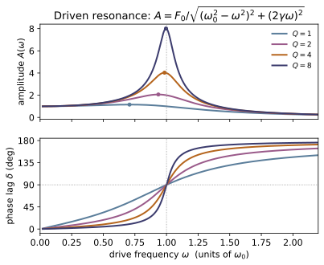
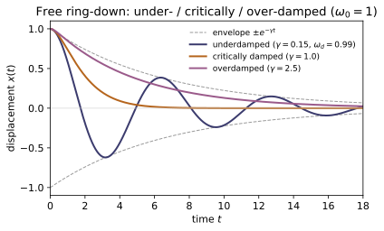
Example problems
Solve x″ + ω₀²x = 0 and confirm the period is 2π/ω₀, independent of amplitude. Check: integrate_oscillator(omega0, 0, 1, 0, …) vs cos(ω₀t). Answer: $x(t)=C\cos(\omega_0 t+\varphi)$ with period $T=2\pi/\omega_0$, independent of amplitude.
The equation $x''+\omega_0^2x=0$ is linear with constant coefficients; the trial $x=e^{rt}$ gives the characteristic equation $r^2+\omega_0^2=0$, so $r=\pm i\omega_0$ and
The motion repeats when the phase advances by $2\pi$, i.e. $\omega_0 T=2\pi\Rightarrow T=2\pi/\omega_0$ — set purely by $\omega_0$, with no dependence on the amplitude $C$ (the equation is linear). The data $x(0)=1,\ x'(0)=0$ fix $A=1,B=0$, so $x=\cos\omega_0 t$; the SHM run of integrate_oscillator then returns $x(\pi)=1.00000=\cos2\pi$.
Show the free underdamped response is e^{−γt}[cos ω_d t + (γ/ω_d) sin ω_d t] with ω_d = √(ω₀²−γ²). Check: underdamped_solution vs integrate_oscillator. Answer: $x(t)=e^{-\gamma t}\big[\cos\omega_d t+(\gamma/\omega_d)\sin\omega_d t\big]$ with $\omega_d=\sqrt{\omega_0^2-\gamma^2}$.
For $x''+2\gamma x'+\omega_0^2x=0$ the trial $x=e^{rt}$ gives $r^2+2\gamma r+\omega_0^2=0$, hence
real-oscillatory when $\gamma<\omega_0$. So $x=e^{-\gamma t}(A\cos\omega_d t+B\sin\omega_d t)$. Imposing $x(0)=1$ gives $A=1$, and $x'(0)=0=-\gamma A+\omega_d B$ gives $B=\gamma/\omega_d$, so $x(t)=e^{-\gamma t}[\cos\omega_d t+(\gamma/\omega_d)\sin\omega_d t]$ — precisely underdamped_solution, which tracks integrate_oscillator to $\sim10^{-4}$ (e.g. $\omega_d=1.98997$ for $\omega_0=2,\gamma=0.2$).
Show Q = ω₀/(2γ) and that the energy decays as e^{−2γt}. Check: energy ratio in integrate_oscillator; quality_factor. Answer: $E\propto e^{-2\gamma t}$ and $Q=\omega_0/(2\gamma)$; e.g. quality_factor(2,0.2)$=5$.
The free underdamped motion sits inside the envelope $e^{-\gamma t}$, so the energy, quadratic in amplitude, decays at twice the rate:
The fractional energy lost per radian of oscillation is $\dfrac{-\dot E}{\omega_0 E}=\dfrac{2\gamma}{\omega_0}\equiv\dfrac1Q$, so $Q=\omega_0/(2\gamma)$. Thus quality_factor(2,0.2)$=5.000$, and over $t=10$ at $\gamma=0.3$ the energy ratio is $\approx e^{-2\gamma t}=e^{-6}\approx0.0025$, well under the $5\%$ the decay test requires.
Derive A(ω) = F₀/√((ω₀²−ω²)²+(2γω)²) and show it peaks at √(ω₀²−2γ²). Check: driven_amplitude vs the steady-state amplitude from integrate_oscillator. Answer: $A(\omega)=F_0/\sqrt{(\omega_0^2-\omega^2)^2+(2\gamma\omega)^2}$, peaking at $\omega=\sqrt{\omega_0^2-2\gamma^2}$.
Seek the steady state of $x''+2\gamma x'+\omega_0^2x=F_0\cos\omega t$ as $x=\mathrm{Re}\,[X e^{i\omega t}]$. Substituting,
The peak minimizes the denominator $D(\omega)=(\omega_0^2-\omega^2)^2+(2\gamma\omega)^2$: setting $\tfrac{dD}{d\omega}=-4\omega(\omega_0^2-\omega^2)+8\gamma^2\omega=0$ gives $\omega^2=\omega_0^2-2\gamma^2$, i.e. resonance at $\omega=\sqrt{\omega_0^2-2\gamma^2}$. For $\omega_0=2,\gamma=0.2$, resonance_frequency$=1.9799$ and driven_amplitude(2,0.2,1,1.5)$=0.5405$ matches the integrator's steady amplitude $0.5405$.
~CM-05Expand a potential about a minimum and identify ω₀ = √(U″(x₀)/m); apply to the pendulum (U″ = mgl ⇒ ω₀ = √(g/l)). (Connects ~CM-05 stability to this module.) Answer: $\omega_0=\sqrt{U''(x_0)/m}$ (generally $\sqrt{U''/I}$); for the pendulum $\omega_0=\sqrt{g/l}$.
At a minimum $x_0$ we have $U'(x_0)=0$, so the Taylor expansion gives
Then $m\ddot\xi=-U''(x_0)\,\xi$ for $\xi=x-x_0$ — simple harmonic motion with $\omega_0=\sqrt{U''(x_0)/m}$ (a positive $U''$, a genuine minimum, is exactly the ~CM-05 stability condition). For the pendulum $U(\theta)=mgl(1-\cos\theta)$ the curvature is $U''(0)=mgl$ and the inertia is $I=ml^2$, so $\omega_0=\sqrt{U''/I}=\sqrt{mgl/ml^2}=\sqrt{g/l}$ — the $\omega_0$ that feeds every integrate_oscillator run in this module.
Run the worked code: cd CM/CM-15_oscillations/code && python3 oscillations.py
CM-16 — Coupled Oscillations & Normal Modes
Classical Mechanics trunk · CM/CM-16_normal_modes · open in the Teaching Network
The small-oscillation eigenvalue problem K v = ω²M v for a coupled system, solved by reducing it to a symmetric eigenproblem and diagonalizing with MA-04. Returns the normal frequencies and (mass-orthonormal) normal modes.
Key equations
Example problems
For two equal masses joined by three identical springs (K = [[2k,−k],[−k,2k]]), find the normal frequencies √(k/m) and √(3k/m) and their mode shapes (in-phase, out-of-phase). Check: normal_modes([[2,-1],[-1,2]], [1,1]). Answer: $\omega=\sqrt{k/m}=1$ for the in-phase mode $(1,1)/\sqrt2$ and $\omega=\sqrt{3k/m}=\sqrt3$ for the out-of-phase mode $(1,-1)/\sqrt2$.
With $M=mI$ the problem $K\mathbf v=\omega^2 m\mathbf v$ is the ordinary eigenproblem of $K=k[[2,-1],[-1,2]]$. The characteristic equation is
so $\omega=\sqrt{k/m}$ and $\sqrt{3k/m}$. For $\lambda=k$: $(2k-k)v_1=kv_2\Rightarrow v_1=v_2$, the in-phase mode $(1,1)/\sqrt2$ (the middle spring never stretches — lower $\omega$). For $\lambda=3k$: $v_2=-v_1$, the out-of-phase mode $(1,-1)/\sqrt2$ (middle spring maximally stretched — higher $\omega$). With $k=m=1$, normal_modes([[2,-1],[-1,2]],[1,1]) returns frequencies $[1.0,1.7321]$ and exactly these shapes.
Show every mode satisfies Kv = ω²Mv. Check: verify the relation component-by-component for unequal masses. Answer: substituting $\mathbf x=\mathbf v\,e^{i\omega t}$ into $M\ddot{\mathbf x}=-K\mathbf x$ gives $K\mathbf v=\omega^2 M\mathbf v$.
The small-oscillation equations are $M\ddot{\mathbf x}=-K\mathbf x$. A normal mode oscillates rigidly, $\mathbf x=\mathbf v\,e^{i\omega t}$, so $\ddot{\mathbf x}=-\omega^2\mathbf x$ and
a generalized (mass-weighted) eigenproblem. The code reduces it to the symmetric eigenproblem of $A=M^{-1/2}KM^{-1/2}$ and maps the eigenvectors back via $\mathbf v=M^{-1/2}\mathbf u$, so each returned $(\omega,\mathbf v)$ satisfies the relation by construction. Component-by-component $(K\mathbf v)_i=\omega^2 M_i v_i$, which the test verifies for $K=[[3,-1],[-1,2]]$, $M=[2,1]$ to $10^{-7}$.
Show distinct normal modes are orthogonal in the mass inner product vₐᵀMv_b = δ_ab. Check: mode_inner_product(M, modes[a], modes[b]). Answer: $\mathbf v_a^{\top} M\,\mathbf v_b=\delta_{ab}$ — the modes are orthonormal in the mass metric.
The reduced matrix $A=M^{-1/2}KM^{-1/2}$ is real symmetric, so its eigenvectors can be chosen orthonormal, $\mathbf u_a^{\top}\mathbf u_b=\delta_{ab}$. The physical modes are $\mathbf v=M^{-1/2}\mathbf u$, hence
So distinct modes are orthogonal and each is normalized in the mass inner product (physically, the modes simultaneously diagonalize the kinetic and potential energies). mode_inner_product(M, modes[a], modes[b]) then returns $\delta_{ab}$ to $10^{-7}$ for the 3-mass $K=[[3,-1,0],[-1,2,-1],[0,-1,3]]$, $M=[1,2,1]$.
For a fixed–fixed chain of three equal masses & springs show ω_j² = (2k/m)(1 − cos(jπ/4)), j = 1,2,3. Check: normal_modes of the 3×3 tridiagonal K. Answer: $\omega_j=\sqrt{(2k/m)(1-\cos(j\pi/4))}=\{0.7654,\,1.4142,\,1.8478\}\sqrt{k/m}$ for $j=1,2,3$.
The fixed–fixed chain has $K=k[[2,-1,0],[-1,2,-1],[0,-1,2]]$, $M=mI$. With walls at $n=0,4$ the modes are standing waves $v^{(j)}_n=\sin(nj\pi/4)$; acting with the tridiagonal $K$ on a sine multiplies it by the discrete-Laplacian eigenvalue $2-2\cos(j\pi/4)$, so
Numerically $\omega_j^2=\{0.586,\,2,\,3.414\}\,k/m$, i.e. $\omega_j=\{0.7654,1.4142,1.8478\}\sqrt{k/m}$ — exactly what normal_modes of the $3\times3$ tridiagonal $K$ returns ($k=m=1$).
Explain how transforming to normal coordinates turns the coupled equations into independent simple oscillators (~CM-15), each a single Fourier tone (~MA-09). Answer: in normal coordinates $q_j$ the system becomes $\ddot q_j+\omega_j^2 q_j=0$ — independent oscillators, each a single tone.
Collect the mass-orthonormal modes as the columns of $P$, so that $P^{\top}MP=I$ and $P^{\top}KP=\operatorname{diag}(\omega_j^2)$. Define normal coordinates $\mathbf q=P^{-1}\mathbf x$, i.e. $\mathbf x=\sum_j q_j\mathbf v_j$. Substituting into $M\ddot{\mathbf x}=-K\mathbf x$ and left-multiplying by $P^{\top}$,
The coupling is gone: each $q_j(t)=C_j\cos(\omega_j t+\varphi_j)$ is an independent ~CM-15 oscillator — a single Fourier tone (~MA-09) — and a general motion is the superposition $\mathbf x(t)=\sum_j q_j(t)\,\mathbf v_j$. The $P$ whose columns diagonalize both $T$ and $U$ is exactly the mass-orthonormal set returned by normal_modes ($P^{\top}MP=I$ via mode_inner_product).
Run the worked code: cd CM/CM-16_normal_modes/code && python3 normal_modes.py
CM-17 — Lagrangian Mechanics
Classical Mechanics trunk · CM/CM-17_lagrangian · open in the Teaching Network
Generalized coordinates and the Euler–Lagrange equation d/dt(∂L/∂q̇) − ∂L/∂q = 0, the conjugate momentum p = ∂L/∂q̇, and the Jacobi energy. The variational machinery is reused directly from MA-13 (t, q, q̇ play the role of MA-13's x, y, y′).
Key equations
Example problems
For L = ½q̇² − ½ω²q² show the EL equation is q̈ = −ω²q and that q = cos(ωt) solves it. Check: el_residual is ~0 on cos(ωt), large on a wrong path.
The Lagrangian $L=\tfrac12\dot q^2-\tfrac12\omega^2 q^2$ has $\partial L/\partial\dot q=\dot q$ and $\partial L/\partial q=-\omega^2 q$, so the Euler–Lagrange equation reads
i.e. $\ddot q=-\omega^2 q$. Substituting the candidate $q=\cos\omega t$ gives $\ddot q=-\omega^2\cos\omega t=-\omega^2 q$, so the residual vanishes identically along it. Numerically el_residual on the true path $\cos\omega t$ peaks at $8.22\times10^{-5}\approx0$, whereas a wrong path such as $q=t^2$ pushes it above $0.1$ — exactly the contrast the check asserts.
Use θ as the generalized coordinate: L = ½ml²θ̇² + mgl cos θ ⇒ θ̈ = −(g/l)sin θ. Check: integrate with integrate_eom and confirm the EL residual stays ~0.
With $L=\tfrac12 ml^2\dot\theta^2+mgl\cos\theta$, the pieces are $\partial L/\partial\dot\theta=ml^2\dot\theta$ and $\partial L/\partial\theta=-mgl\sin\theta$. Euler–Lagrange then gives
and dividing by $ml^2$ yields $\ddot\theta=-(g/l)\sin\theta$. Feeding this acceleration to integrate_eom produces a trajectory that is, by construction, an extremal of $L$; evaluating el_residual on it gives a maximum of $4.71\times10^{-6}\approx0$, confirming the integrated path satisfies the EL equation.
Compute p = ∂L/∂q̇ for a kinetic Lagrangian and show it is the ordinary momentum mq̇. Check: generalized_momentum.
For a kinetic-energy Lagrangian $L=\tfrac12 m\dot q^2-V(q)$ the conjugate momentum is
since the potential $V(q)$ carries no $\dot q$ dependence and drops out — leaving exactly the ordinary Newtonian momentum. The central-difference generalized_momentum reproduces it: in the demo ($m=1$, $\dot q=3$) it returns $3.0000=m\dot q$, and for $m=2$, $\dot q=3$ it gives $m\dot q=6$.
~CM-18Show that if L does not depend on q, then p = ∂L/∂q̇ is conserved. Check: free particle momentum is constant along the motion.
A coordinate is cyclic when $\partial L/\partial q=0$. The Euler–Lagrange equation then collapses to
so the conjugate momentum is a constant of the motion. For the free particle $L=\tfrac12\dot q^2$ there is no $q$ in $L$, hence $p=\dot q$ is conserved: integrating $\ddot q=0$ from $\dot q=2.5$ and sampling generalized_momentum along the path returns $2.5$ at every checkpoint, as the test verifies.
~CM-19Show h = q̇ ∂L/∂q̇ − L equals T + V for L = T − V. Check: jacobi_energy.
Take $L=T-V$ with $T=\tfrac12 m\dot q^2$ quadratic in the velocity. Then $\partial L/\partial\dot q=m\dot q$, so $\dot q\,\partial L/\partial\dot q=m\dot q^2=2T$ (Euler's theorem for a homogeneous quadratic). Hence
the total mechanical energy — and the Hamiltonian of ~CM-19. The demo's SHO at $q=1,\dot q=0$ has $h=\tfrac12\omega^2=2$, and jacobi_energy returns $2.0000$; the test's case $m=1.5,\ k=4,\ q=0.7,\ \dot q=1.3$ likewise matches $T+V=2.2475$.
Run the worked code: cd CM/CM-17_lagrangian/code && python3 lagrangian.py
CM-18 — Symmetries & Noether's Theorem
Classical Mechanics trunk · CM/CM-18_noether · open in the Teaching Network
The link between continuous symmetries of the Lagrangian and conserved quantities: translation → momentum, rotation → angular momentum, time-translation → energy. Reuses CM-17's machinery.
Key equations
Example problems
Show that if L is invariant under q → q + ε then p = ∂L/∂q̇ is conserved. Check: free particle has symmetry_defect ~0 and a constant noether_charge.
Under the flow $\delta q=\varepsilon f(q)$ the Lagrangian changes, to first order, by
On a trajectory the Euler–Lagrange equation gives $\partial L/\partial q=\tfrac{d}{dt}(\partial L/\partial\dot q)=\dot p$, so the two terms collapse into a single total derivative:
A symmetry means $\delta L=0$, hence $\dot Q=0$. For pure translation $f=1$ this charge is $Q=p=\partial L/\partial\dot q$ — the momentum. The free particle $L=\tfrac12\dot q^2$ has no $q$-dependence, so the defect vanishes (symmetry_defect $=$ 0.00e+00) and the charge is frozen along the motion: noether_charge runs $2.5000\to2.5000$.
Show the harmonic oscillator is not translation-invariant (V depends on q), so momentum is not conserved. Check: symmetry_defect(sho, f=1) ≠ 0.
Now the potential $V=\tfrac12 w^2q^2$ depends on position, so
The first-order change under $q\to q+\varepsilon$ (here $f=1$, $f'=0$) is exactly $\delta L/\varepsilon=\partial L/\partial q=-w^2q$, which is what symmetry_defect evaluates. With $w=2$ at the demo point $q=1$ this gives $-(2^2)(1)=-4\neq0$, so translation is broken and the Euler–Lagrange equation reads $\dot p=\partial L/\partial q=-w^2q\neq0$ — the momentum is not conserved, it is being driven by the restoring force. This matches symmetry_defect(sho, f=1) $=-4.0000$.
Show that if ∂L/∂t = 0 the Jacobi energy h = q̇ ∂L/∂q̇ − L is conserved. Check: energy is constant along the oscillator's integrated motion.
Differentiate the Jacobi energy $h=\dot q\,\partial L/\partial\dot q-L$ along the motion:
Expanding $\dfrac{dL}{dt}=\dfrac{\partial L}{\partial t}+\dfrac{\partial L}{\partial q}\dot q+\dfrac{\partial L}{\partial\dot q}\ddot q$ and using the Euler–Lagrange relation $\tfrac{d}{dt}(\partial L/\partial\dot q)=\partial L/\partial q$, every term cancels except one:
So time-translation symmetry, $\partial L/\partial t=0$, makes $h$ conserved — Noether's theorem for the clock. The oscillator $h=\tfrac12\dot q^2+\tfrac12 w^2q^2=T+V$ carries no explicit $t$; with amplitude $A=1$ and $w=2$ it equals $\tfrac12 w^2A^2=2$, held fixed along the integrated orbit so that energy runs $2.00000\to2.00000$.
~CM-09For a central Lagrangian, the rotation symmetry gives conserved angular momentum. Connect this to the central-force result of ~CM-09/~CM-11. Answer: the rotation generator $f=(-y,x)$ gives the Noether charge $Q=xp_y-yp_x=L_z$ — angular momentum, the conserved quantity of central-force motion (~CM-09/~CM-11).
Take a planar central Lagrangian $L=\tfrac12 m(\dot x^2+\dot y^2)-V(r)$ with $r=\sqrt{x^2+y^2}$. An infinitesimal rotation by $\delta\phi$ acts as $\delta x=-y\,\delta\phi$, $\delta y=x\,\delta\phi$, i.e. generator $f=(-y,x)$; it leaves $r$ (hence $V$) and the kinetic $\dot x^2+\dot y^2$ unchanged, so $\delta L=0$. The two-component Noether charge is then
Equivalently, in polar coordinates $L=\tfrac12 m(\dot r^2+r^2\dot\theta^2)-V(r)$ is independent of $\theta$, so $\theta$ is cyclic and $p_\theta=\partial L/\partial\dot\theta=mr^2\dot\theta$ is conserved — the same $L_z$. This is exactly the angular momentum that fixes the orbital plane and gives Kepler's second law in ~CM-09/~CM-11; it is the rotational twin of the translation $\to$ momentum charge verified in P1 (noether_charge $2.5000\to2.5000$).
Identify the cyclic coordinate(s) of a planar Kepler Lagrangian L(r, ṙ, θ̇) and the conserved momentum each implies (here, the angular momentum p_θ). Answer: $\theta$ is the only cyclic coordinate; $p_\theta=\partial L/\partial\dot\theta=mr^2\dot\theta$ (angular momentum) is conserved. $r$ is not cyclic, while $\partial L/\partial t=0$ additionally conserves energy.
The planar Kepler Lagrangian
contains $\theta$ only through $\dot\theta$, never $\theta$ itself, so $\theta$ is cyclic: $\partial L/\partial\theta=0$ and the Euler–Lagrange equation collapses to $\tfrac{d}{dt}(\partial L/\partial\dot\theta)=0$. Hence
the conserved angular momentum (the $f=1$ rotation charge of P4). By contrast $r$ appears explicitly — in $r^2\dot\theta^2$ and in $GMm/r$ — so $p_r=m\dot r$ is not conserved; that equation carries the centrifugal and gravitational forces. Since $L$ also has no explicit $t$, the Jacobi energy is conserved as well, exactly as in P3 (energy $2.00000\to2.00000$). One missing coordinate $\Rightarrow$ one conserved momentum — the cyclic-coordinate shortcut.
Run the worked code: cd CM/CM-18_noether/code && python3 noether.py
CM-19 — Hamiltonian Mechanics
Classical Mechanics trunk · CM/CM-19_hamiltonian · open in the Teaching Network
The Hamiltonian H(q, p) from the Legendre transform of L, Hamilton's equations q̇ = ∂H/∂p, ṗ = −∂H/∂q, and the phase-space flow (integrated with MA-07).
Key equations
Example problems
From L = ½q̇² − ½ω²q² get p = q̇ and H = ½p² + ½ω²q². Check: hamiltonian_from_potential(1, lambda q: 0.5wwqq).
Answer: $p=\dot q$ and $H=\tfrac12 p^2+\tfrac12\omega^2 q^2$ (the total energy $T+V$).
The momentum conjugate to $q$ is $p=\partial L/\partial\dot q=\dot q$, so the velocity to eliminate is $\dot q=p$. The Hamiltonian is the Legendre transform of $L$ in $\dot q$:
Because $L$ is quadratic in $\dot q$, Euler's theorem gives $p\dot q=2T$, hence $H=2T-(T-V)=T+V$ is just the total energy. The code's hamiltonian_from_potential(1, lambda q: 0.5wwqq) builds exactly $H(q,p)=p^2/2+\tfrac12\omega^2q^2$; for $\omega=2$ at the start $(q,p)=(1,0)$ it returns $H=\tfrac12\cdot4\cdot1^2=2$, the demo's H: 2.000000.
Show q̇ = ∂H/∂p = p and ṗ = −∂H/∂q = −ω²q, recovering SHM. Check: hamilton_rhs signs and the integrated q(t) = cos(ωt).
Answer: $\dot q=p,\ \dot p=-\omega^2 q$, so $\ddot q=-\omega^2 q$ — SHM with $q(t)=\cos\omega t$.
Reading the partials of $H=\tfrac12 p^2+\tfrac12\omega^2 q^2$ straight off,
The single second-order Euler–Lagrange equation has split into two symmetric first-order equations. Differentiating the first and substituting the second eliminates $p$: $\ddot q=\dot p=-\omega^2 q$, simple harmonic motion, solved by $q(t)=\cos\omega t$ for $q(0)=1,\ \dot q(0)=0$. The code's hamilton_rhs returns $[\,\partial H/\partial p,\,-\partial H/\partial q\,]=[\,p,\,-\omega^2 q\,]$ — at $\omega=3,\ (q,p)=(2,5)$ that is $(\dot q,\dot p)=(5,-18)$ with the correct signs — and integrating at $\omega=2$ from $(1,0)$ gives $q(\pi/2)=\cos\pi=-1$, the demo's q(pi/2) = -1.00000.
Show dH/dt = 0 along the flow when H has no explicit time. Check: H constant along integrate_hamilton.
Answer: $dH/dt=\partial H/\partial t$ along the flow, which vanishes when $H$ has no explicit $t$.
Differentiate $H(q,p,t)$ along a trajectory with the chain rule, then substitute Hamilton's equations $\dot q=\partial H/\partial p,\ \dot p=-\partial H/\partial q$:
The two dynamical terms cancel identically, so an autonomous Hamiltonian ($\partial H/\partial t=0$) is conserved — the energy is a constant of the motion. The demo integrates the $\omega=2$ oscillator over a full period and prints H: 2.000000 -> 2.000000, and test_energy_conserved (with $\omega=1.5$) holds $H$ fixed to within $10^{-5}$ all along the flow.
Show the SHO orbit in (q, p) is the closed ellipse p² + ω²q² = 2E. Check: the quantity p² + ω²q² is constant on the trajectory.
Answer: $p^2+\omega^2 q^2=2E$ — an ellipse with semi-axes $\sqrt{2E}$ (in $p$) and $\sqrt{2E}/\omega$ (in $q$).
Energy conservation (P3) pins the orbit to a level set of $H=\tfrac12 p^2+\tfrac12\omega^2 q^2=E$. Multiplying through by $2$,
the equation of an ellipse in the $(q,p)$ plane with semi-axis $\sqrt{2E}$ along the $p$-axis and $\sqrt{2E}/\omega$ along the $q$-axis. The level set is a closed curve, so the motion is periodic and returns to its starting point each period. In the demo, $\omega=2$ launched from $(q,p)=(1,0)$ has $E=2$, giving $p^2+\omega^2q^2=2E=4$ (numerically equal to $\omega^2$ here because $q_0=1$); the printed p^2 + w^2 q^2 along orbit: [4.0, 4.0, ...] stays pinned at $4.0$, and test_phase_orbit_is_closed_ellipse confirms the trajectory closes after one period.
Sketch the (θ, p_θ) phase portrait of a pendulum: closed curves (libration) inside the separatrix, open curves (rotation) outside. (Integrate from several energies.)
Answer: center at $(0,0)$, saddles at $(\pm\pi,0)$; libration (closed loops) for $E<2mg\ell$, rotation (open curves) for $E>2mg\ell$, divided by the separatrix at $E=2mg\ell$.
For the pendulum $H=\dfrac{p_\theta^2}{2m\ell^2}+mg\ell(1-\cos\theta)$, Hamilton's equations are
Energy $E=H$ is conserved (P3), so each orbit is a contour $E=\text{const}$. The equilibria $\sin\theta=0,\ p_\theta=0$ are a stable center at $(0,0)$ and unstable saddles at $(\pm\pi,0)$, whose energy $E=2mg\ell$ defines the separatrix. For $E<2mg\ell$ the bob cannot reach the top: $p_\theta$ vanishes at two turning points and the contour is a closed loop about $(0,0)$ — libration. For $E>2mg\ell$, $p_\theta$ keeps one sign, $\theta$ advances without bound, and the contour runs off across the $\theta$-axis — rotation over the top. Integrating integrate_hamilton from energies straddling $2mg\ell$ traces exactly these two families, separated by the separatrix through $(\pm\pi,0)$.
Run the worked code: cd CM/CM-19_hamiltonian/code && python3 hamiltonian.py
CM-20 — Poisson Brackets & Canonical Transformations
Classical Mechanics trunk · CM/CM-20_poisson_brackets · open in the Teaching Network
The Poisson bracket {f, g}, the fundamental bracket {q, p} = 1, the equation of motion df/dt = {f, H}, and the test for a canonical transformation ({Q, P} = 1).
Key equations
Example problems
Show {q, p} = 1, {q, q} = 0, {p, p} = 0. Check: poisson_bracket of the coordinate functions. Answer: $\{q,p\}=1$ and $\{q,q\}=\{p,p\}=0$.
Treat $q$ and $p$ as independent phase-space coordinates, so $\partial q/\partial q=1,\ \partial q/\partial p=0$ and $\partial p/\partial p=1,\ \partial p/\partial q=0$. The bracket is
With $f=q,\ g=p$: $\{q,p\}=(1)(1)-(0)(0)=1$. With $f=g=q$: $\{q,q\}=(1)(0)-(0)(1)=0$, and likewise $\{p,p\}=(0)(1)-(1)(0)=0$ — also forced by antisymmetry, since $\{f,f\}=-\{f,f\}=0$. These are the fundamental brackets, matching poisson_bracket $\to 1.000000$ for $\{q,p\}$ and $0.000000$ for $\{q,q\}$.
Show {f, g} = −{g, f} for arbitrary f, g. Check: compare poisson_bracket(f,g,…) to −poisson_bracket(g,f,…). Answer: swapping $f\leftrightarrow g$ flips the sign of every term, so $\{f,g\}=-\{g,f\}$ (hence $\{f,f\}=0$).
Write both brackets out, using that ordinary partial derivatives are numbers that commute:
Reading the two right-hand sides term by term, $\{g,f\}$ is $\{f,g\}$ with the two products interchanged, i.e. with every sign reversed, so $\{f,g\}=-\{g,f\}$. Setting $g=f$ gives $\{f,f\}=-\{f,f\}=0$ — the reason $\{q,q\}=\{p,p\}=0$ in P1. The check bears this out at every sampled point, where poisson_bracket(f,g,…) and poisson_bracket(g,f,…) come out equal and opposite for $f=q^2+p,\ g=qp-p^2$.
Show q̇ = {q, H} = ∂H/∂p and ṗ = {p, H} = −∂H/∂q. Check: time_derivative of q and p with the oscillator Hamiltonian. Answer: $\dot q=\{q,H\}=\partial H/\partial p$ and $\dot p=\{p,H\}=-\partial H/\partial q$ — Hamilton's equations.
Put $g=H$ in the bracket and use $\partial q/\partial q=1,\ \partial q/\partial p=0$ (and the reverse for $p$):
These are Hamilton's equations, now compressed into the single statement $\dot f=\{f,H\}$. For $H=\tfrac12 p^2+\tfrac12\omega^2 q^2$ with $\omega=2$ they read $\dot q=p,\ \dot p=-\omega^2 q$; at $(q,p)=(1,\tfrac12)$ that is $\dot q=0.5$ and $\dot p=-4$, matching time_derivative $\to 0.5000$ and $-4.0000$.
Show a quantity f with ∂f/∂t = 0 is conserved iff {f, H} = 0 (e.g. momentum for a free particle, energy via {H, H} = 0). Check: time_derivative(p, free_H, …) ≈ 0. Answer: with $\partial f/\partial t=0$, $df/dt=\{f,H\}$, so $f$ is conserved iff $\{f,H\}=0$; energy via $\{H,H\}=0$, free-particle momentum via $\{p,H\}=0$.
The general rate of change is $\dfrac{df}{dt}=\{f,H\}+\dfrac{\partial f}{\partial t}$. For a quantity with no explicit time dependence the last term drops, leaving
so $f$ is conserved ($df/dt=0$) iff $\{f,H\}=0$. Energy is automatic: $\{H,H\}=0$ by antisymmetry (P2), hence $dH/dt=0$. A free particle has $H=p^2/2m$ depending only on $p$, so $\{p,H\}=-\partial H/\partial q=0$ and momentum is conserved. This is exactly what time_derivative(p, free_H, …) $\approx 0$ and poisson_bracket(H,H,…) $=0$ report.
Show the scaling (Q = λq, P = p/λ) and the swap (Q = p, P = −q) are canonical, but (Q = q, P = 2p) is not. Check: is_canonical. (Preserving {q,p} = preserving phase-space volume — Liouville's theorem.) Answer: $\{Q,P\}=1$ for the scaling and the swap (canonical); $\{q,2p\}=2\neq1$ (not canonical).
A map $(q,p)\to(Q,P)$ is canonical iff it preserves the fundamental bracket, $\{Q,P\}=1$. Evaluate each:
The scaling and the swap give $1$ and are canonical; $Q=q,\ P=2p$ gives $2$ and is not. Geometrically $\{Q,P\}$ is the Jacobian $\partial(Q,P)/\partial(q,p)$, so a canonical map preserves phase-space area (Liouville's theorem) while $Q=q,\,P=2p$ doubles it. Hence is_canonical returns True, True, False respectively.
Run the worked code: cd CM/CM-20_poisson_brackets/code && python3 poisson_brackets.py
CM-21 — Hamilton–Jacobi Theory & Action-Angle Variables
Classical Mechanics trunk · CM/CM-21_hamilton_jacobi · open in the Teaching Network
Hamilton's characteristic function W(q) = ∫p dq, the action variable J = ∮p dq, and the exact oscillation period T = dJ/dE — isochronous for the harmonic oscillator, amplitude-dependent for an anharmonic well.
Key equations
Example problems
For a time-independent H show S = W(q) − Et reduces the Hamilton–Jacobi equation to H(q, ∂W/∂q) = E, and for 1-DOF gives ∂W/∂q = √(2m(E−V)). Check: characteristic_function. Answer: $H(q,\partial W/\partial q)=E$ with $\partial W/\partial q=\sqrt{2m(E-V)}$.
The Hamilton–Jacobi equation is $H\!\left(q,\dfrac{\partial S}{\partial q}\right)+\dfrac{\partial S}{\partial t}=0$. Insert the separated ansatz $S(q,t)=W(q)-Et$, for which
so the time term supplies the $-E$ and the equation collapses to the time-independent $H(q,\partial W/\partial q)=E$. For one degree of freedom $H=\dfrac{p^2}{2m}+V(q)$ with $p=\partial W/\partial q$, setting $H=E$ gives $\dfrac{(\partial W/\partial q)^2}{2m}+V=E$, hence
This is precisely the integrand characteristic_function accumulates from the turning point outward.
Show J = ∮p dq = 2πE/ω for V = ½mω²q². Check: action_variable vs 2πE/ω. Answer: $J=2\pi E/\omega$.
In phase space the energy-$E$ orbit is $\dfrac{p^2}{2m}+\dfrac12 m\omega^2 q^2=E$, an ellipse, and $J=\oint p\,dq$ is the area it encloses. Its semi-axes are
so the enclosed area is
(The direct integral $J=2\int_{-a}^{a}\sqrt{2m(E-\tfrac12 m\omega^2 q^2)}\,dq$ gives the same result.) For $\omega=2$ this is $J=\pi E$; at $E=1$, action_variable $\to 3.14160$ versus $2\pi E/\omega=3.14159$.
Show T = dJ/dE = 2π/ω, independent of energy/amplitude. Check: period for several E. Answer: $T=dJ/dE=2\pi/\omega$, independent of $E$ (isochronous).
From P2 the action is $J=2\pi E/\omega$ with $\omega$ constant. The period of any bound 1-DOF motion is $T=dJ/dE$, so
There is no $E$ on the right: the period is independent of energy, hence of amplitude — the oscillator is isochronous (the basis of the pendulum clock at small swing). The recovered frequency is $\omega_{\rm osc}=2\pi/T=\omega$. For $\omega=2$, period returns $3.14159=2\pi/\omega$ at every tested $E$ (e.g. $E=1,2,4$), exactly as claimed.
Show the pendulum period grows with amplitude and reduces to 2π√(l/g) for small swings. Check: period(lambda q: 1-cos(q), 1, E, …) increasing in E. Answer: $T\to 2\pi\sqrt{l/g}$ as the amplitude $\to 0$, and $T$ grows with amplitude.
Expand the potential for small angle, $V=1-\cos\theta=\tfrac12\theta^2-\tfrac{1}{24}\theta^4+\cdots$. Keeping the leading term gives a harmonic well $V\approx\tfrac12\theta^2$ with $\omega_0=1$, so as $E\to0$ the period approaches the isochronous value
The quartic correction is negative, so the true restoring torque $-\sin\theta$ is softer than the linear $-\theta$: the bob lingers near the turning points and $T$ grows with amplitude (exactly, $T=4\sqrt{l/g}\,K(\sin\tfrac{\theta_{\max}}{2})$, increasing in $\theta_{\max}$). The code bears this out — period rises from $6.2911\approx2\pi$ at $E=0.01$ to $6.7430$ at $E=0.5$ and $8.6261$ at $E=1.5$.
~QM-01/~QM-15Impose the old-quantum-theory condition ∮p dq = nh on the oscillator and recover E_n = nℏω. (A historical bridge from the classical action to quantization.) Answer: $\oint p\,dq=nh$ with $J=2\pi E/\omega$ gives $E_n=n\hbar\omega$.
From P2 the oscillator's action is $J=\oint p\,dq=\dfrac{2\pi E}{\omega}$ (the value action_variable returns numerically). The Bohr–Sommerfeld rule quantizes this action in units of Planck's constant,
so $E_n=\dfrac{nh\,\omega}{2\pi}=n\hbar\omega$ using $\hbar=h/2\pi$. The old quantum theory thus gives evenly spaced levels $E_n=n\hbar\omega$. The full WKB treatment (~QM-15) adds the Maslov $\tfrac12$, $\oint p\,dq=(n+\tfrac12)h$, sharpening this to $E_n=(n+\tfrac12)\hbar\omega$ and restoring the zero-point energy the old theory missed — but the level spacing $\hbar\omega$ already drops straight out of the classical action $J=2\pi E/\omega$.
Run the worked code: cd CM/CM-21_hamilton_jacobi/code && python3 hamilton_jacobi.py
CM-22 — Continuum Mechanics & the Continuity Equation
Classical Mechanics trunk · CM/CM-22_continuum_mechanics · open in the Teaching Network
Local conservation of mass: the continuity equation ∂ρ/∂t + ∇·(ρv) = 0, the material derivative D/Dt = ∂/∂t + v·∇, and the equivalence of the Eulerian and material forms. Reuses MA-02's divergence/gradient.
Key equations
Example problems
Equate the rate of mass loss from a fixed volume to the flux through its boundary and shrink the volume to get ∂ρ/∂t + ∇·(ρv) = 0. Check: continuity_residual ~0 for an advected density bump ρ = f(x − ct), v = (c,0,0). Answer: $\dfrac{\partial\rho}{\partial t}+\nabla\cdot(\rho\mathbf v)=0$.
Let $\Omega$ be a fixed volume bounded by $\partial\Omega$. Its mass $M=\int_\Omega\rho\,dV$ changes only through flux of $\mathbf j=\rho\mathbf v$ across the surface:
the last step by the divergence theorem. The volume is fixed, so $d/dt$ passes inside as $\partial/\partial t$, giving $\int_\Omega\big[\partial_t\rho+\nabla\cdot(\rho\mathbf v)\big]\,dV=0$. Since $\Omega$ is arbitrary the integrand must vanish pointwise:
For an advected bump $\rho=f(x-ct),\ \mathbf v=(c,0,0)$: $\partial_t\rho=-c f'$ and $\nabla\cdot(\rho\mathbf v)=\partial_x(cf)=c f'$ cancel, so continuity_residual $\approx-1.7\times10^{-11}\approx0$, as reported.
Use ∇·(ρv) = ρ∇·v + v·∇ρ to show continuity is Dρ/Dt + ρ∇·v = 0. Check: the two forms agree numerically for a compressible flow. Answer: $\dfrac{D\rho}{Dt}+\rho\,\nabla\cdot\mathbf v=0$.
Expand the flux divergence with the product rule,
and substitute into the Eulerian form $\partial_t\rho+\nabla\cdot(\rho\mathbf v)=0$:
The first two terms are the material derivative $\dfrac{D\rho}{Dt}=\partial_t\rho+\mathbf v\cdot\nabla\rho$ (the rate of change following a fluid element), leaving $\dfrac{D\rho}{Dt}+\rho\,\nabla\cdot\mathbf v=0$. The two forms are algebraically identical, which the code confirms: for the compressible test flow the Eulerian residual equals $D\rho/Dt+\rho\,\nabla\cdot\mathbf v$ to machine precision (demo: $1.39000$ vs $1.39000$).
Show that for ∇·v = 0 the density is constant following the flow (Dρ/Dt = 0). Check: divergence_of_velocity = 0 and continuity_residual = 0 for v = (−y,x,0), constant ρ. Answer: $\nabla\cdot\mathbf v=0\Rightarrow D\rho/Dt=0$ — density is carried unchanged by the flow.
Begin from the material form (P2), $\dfrac{D\rho}{Dt}+\rho\,\nabla\cdot\mathbf v=0$. Incompressible means $\nabla\cdot\mathbf v=0$, so the second term vanishes and
i.e. each fluid element keeps its density as it moves. The rigid rotation $\mathbf v=(-y,x,0)$ is divergence-free, $\nabla\cdot\mathbf v=\partial_x(-y)+\partial_y(x)+\partial_z(0)=0$, so with uniform $\rho$ there is nothing to compress: $\partial_t\rho=0$ and $\nabla\cdot(\rho\mathbf v)=\rho\,\nabla\cdot\mathbf v=0$. Hence divergence_of_velocity $=0$ and continuity_residual $=0$, exactly as the test checks.
Write the continuity equation for electric charge, ∂ρ/∂t + ∇·J = 0, and explain why it is "the paradigm for all conservation laws" (~EM-13). Answer: $\dfrac{\partial\rho}{\partial t}+\nabla\cdot\mathbf J=0$ — the same operator, with charge density and current $\mathbf J=\rho\mathbf v$.
Charge is locally conserved just as mass is. Take $\rho$ to be charge density and $\mathbf J=\rho\mathbf v$ the current density (charge flux); the identical divergence-theorem argument as P1 — the charge in $\Omega$ changes only by current through $\partial\Omega$ — gives
It is "the paradigm for all conservation laws" because it is the local statement. Mere global conservation $\frac{d}{dt}\int\rho\,dV=0$ would still allow charge to vanish here and reappear far away; continuity forbids that — any change in $\rho$ must be balanced by current through the immediately surrounding surface. Structurally it is the very operator $\partial_t\rho+\nabla\cdot(\rho\mathbf v)$ that continuity_residual evaluates, with only the conserved density renamed mass $\to$ charge.
~QM-04State the quantum continuity equation ∂|Ψ|²/∂t + ∇·j = 0 and identify the probability current j. (Same structure as mass and charge — the bridge.) Answer: $\dfrac{\partial|\Psi|^2}{\partial t}+\nabla\cdot\mathbf j=0$ with $\mathbf j=\dfrac{\hbar}{m}\,\mathrm{Im}(\Psi^*\nabla\Psi)$.
Take the conserved density to be the probability density $\rho=|\Psi|^2=\Psi^*\Psi$. Differentiating in time and using the Schrödinger equation $i\hbar\,\partial_t\Psi=-\dfrac{\hbar^2}{2m}\nabla^2\Psi+V\Psi$ (with $V$ real) yields a local conservation law of the now-familiar form
where $\mathbf j$ is the probability current. This is the same equation as mass continuity (P1) and charge continuity (P4), now with probability as the conserved density — the reason this module is KEY BRIDGE B2: one structure $\partial_t\rho+\nabla\cdot\mathbf j$, the operator continuity_residual encodes, carried over to ~QM-04.
Run the worked code: cd CM/CM-22_continuum_mechanics/code && python3 continuum_mechanics.py
CM-23 — Fluid Dynamics
Classical Mechanics trunk · CM/CM-23_fluid_dynamics · open in the Teaching Network
The kinematic descriptors of a flow: vorticity ω = ∇×v, the incompressibility test ∇·v = 0, the irrotationality test ∇×v = 0, and Bernoulli's constant ½v² + p/ρ + gz. Reuses MA-02's curl/divergence.
Key equations
Example problems
For v = Ω×r (here (−Ωy, Ωx, 0)) show ω = ∇×v = 2Ω. Check: vorticity = (0, 0, 2Ω).
Answer: $\boldsymbol\omega=2\boldsymbol\Omega=(0,0,2\Omega)$ — the vorticity is twice the (uniform) angular velocity of the fluid elements.
The vorticity is the curl of the velocity field,
For $\mathbf v=(-\Omega y,\ \Omega x,\ 0)$ the first two components vanish ($v_z=0$ and nothing depends on $z$), while the third is $\partial_x(\Omega x)-\partial_y(-\Omega y)=\Omega+\Omega=2\Omega$. Hence $\boldsymbol\omega=(0,0,2\Omega)$ — uniform across the flow, because every element turns rigidly at the same rate $\Omega$ and the vorticity counts that spin twice. With $\Omega=1.5$ this is $(0,0,3)$, matching vorticity $=(0,0,2\Omega)$.
For the shear flow v = (y, 0, 0) show ω = (0, 0, −1) even though no element "orbits". Check: vorticity((y,0,0)) = (0,0,−1).
Answer: $\boldsymbol\omega=(0,0,-1)$; straight streamlines still carry vorticity because of the transverse velocity gradient (shear).
The only nonvanishing derivative of $\mathbf v=(y,0,0)$ is $\partial_y v_x=1$, so
Even though the streamlines are straight (the fluid moves only along $\hat x$), a tiny paddle wheel dropped in the flow spins clockwise: the faster fluid above drags its top forward while the slower fluid below holds its bottom back. Vorticity registers this shear-induced local rotation, not orbital motion — exactly the $(0,0,-1)$ returned by vorticity((y,0,0)).
Show v = ∇φ has zero vorticity (curl of a gradient = 0), e.g. φ = x²−y². Check: is_irrotational True; for this φ also is_incompressible (∇²φ = 0).
Answer: $\nabla\times\nabla\varphi\equiv0$ (every potential flow is irrotational); for $\varphi=x^2-y^2$ also $\nabla\cdot\mathbf v=\nabla^2\varphi=0$, so incompressible.
For any twice-differentiable potential the curl of a gradient vanishes identically, because mixed partials commute:
and likewise for the other two components — so $\mathbf v=\nabla\varphi$ is always irrotational. Taking $\varphi=x^2-y^2$ gives $\mathbf v=(2x,-2y,0)$, whose divergence is $\nabla\cdot\mathbf v=\nabla^2\varphi=2-2=0$: this potential is harmonic, so the flow is incompressible as well. Both is_irrotational and is_incompressible return True.
For v = r show ∇·v = 3 (a source), so the flow is not incompressible, yet it is still irrotational. Check: is_incompressible False, is_irrotational True.
Answer: $\nabla\cdot\mathbf v=3$ (a uniform source — not incompressible), yet $\nabla\times\mathbf v=0$ (still irrotational).
For the radial field $\mathbf v=\mathbf r=(x,y,z)$,
so fluid is produced at a rate $3$ per unit volume — a source, not volume-preserving. Its curl, however, vanishes: $(\nabla\times\mathbf r)_z=\partial_x y-\partial_y x=0$, and the same for the other components, because each velocity component depends only on its own coordinate. Compressibility and rotation are independent properties, so is_incompressible is False while is_irrotational is True.
Use ½v² + p/ρ + gz = const to explain why pressure drops where a fluid speeds up (the Venturi effect / aerofoil lift). Check: compare bernoulli_constant at two speeds with the same constant.
Answer: at fixed height $\tfrac12 v^2+p/\rho=\text{const}$, so faster flow forces lower pressure — the Venturi effect and the origin of aerodynamic lift.
Along a streamline at constant height Bernoulli's relation reduces to
so wherever the flow speeds up ($v_2>v_1$) the pressure must drop. Concretely, with $\rho=1000$ a point at $v=2\ \mathrm{m/s},\ p=100\ \mathrm{kPa}$ has constant $\tfrac12(2^2)+100=102$; at a constriction where $v=4\ \mathrm{m/s}$ the same constant forces $p/\rho=102-\tfrac12(4^2)=94$, i.e. $p=94\ \mathrm{kPa}$ — a $6\ \mathrm{kPa}$ drop. Over an aerofoil the air runs faster across the longer upper surface, lowering the pressure there and producing net upward lift. Both states share the same bernoulli_constant: bernoulli_constant(2,1e5,1000,0) $=$ bernoulli_constant(4,9.4e4,1000,0) $=102$.
Run the worked code: cd CM/CM-23_fluid_dynamics/code && python3 fluid_dynamics.py
CM-24 — Nonlinear Dynamics & Chaos
Classical Mechanics trunk · CM/CM-24_nonlinear_dynamics · open in the Teaching Network
The physics application of dynamical systems: fixed points and their stability (via the Jacobian, reusing MA-22's classifier), limit cycles (the van der Pol oscillator), and chaos with a positive Lyapunov exponent (the logistic map, reusing MA-22).
Example problems
For ẋ = (ω, −sin θ) find the fixed points and classify them: (0,0) a center, (π,0) a saddle. Check: classify_fixed_point(pendulum_flow(0.0), …).
Answer: fixed points $(0,0)$ and $(\pi,0)$; eigenvalues $\pm i$ (a center) at the bottom, $\pm1$ (a saddle) at the top.
Fixed points require $\omega=0$ and $\sin\theta=0$, i.e. $(\theta,\omega)=(0,0)$ (hanging down) and $(\pi,0)$ (inverted). The Jacobian of the flow $(\omega,\,-\sin\theta)$ and its characteristic equation are
At $(0,0)$, $\cos\theta=1$ gives $\lambda^2=-1$, so $\lambda=\pm i$: purely imaginary — a center, the undamped bob oscillating forever. At $(\pi,0)$, $\cos\theta=-1$ gives $\lambda^2=1$, so $\lambda=\pm1$: real and opposite-signed — a saddle, the unstable inverted point. So classify_fixed_point(pendulum_flow(0.0), …) returns center at $(0,0)$ and saddle at $(\pi,0)$.
Add damping (γ > 0) and show (0,0) becomes a stable spiral (the eigenvalues gain a negative real part) while (π,0) stays a saddle. Check: classify_fixed_point(pendulum_flow(0.5), …).
Answer: damping moves the bottom eigenvalues to $-\tfrac{\gamma}{2}\pm i\sqrt{1-\gamma^2/4}$ (negative real part — a stable spiral); the top stays a saddle.
With linear damping the Jacobian gains $-\gamma$ in the lower-right corner:
At the bottom ($\cos\theta=1$), $\lambda=-\tfrac{\gamma}{2}\pm\sqrt{\gamma^2/4-1}$; for $\gamma=0.5$ the discriminant is negative, giving complex eigenvalues with real part $-\gamma/2=-0.25<0$ — the center becomes a stable spiral that spirals to rest. At the top ($\cos\theta=-1$), $\lambda^2+\gamma\lambda-1=0$ has roots multiplying to $-1$, so they stay real with opposite signs — a saddle for any $\gamma$. Hence classify_fixed_point(pendulum_flow(0.5), …) gives stable spiral at $(0,0)$ and saddle at $(\pi,0)$.
~MA-22Show the van der Pol oscillator has an attracting limit cycle: integrate from inside and outside and confirm both reach the same closed orbit. Check: integrate_flow(van_der_pol(1.0), …) from (0.1,0) and (3,0).
Answer: a single attracting limit cycle of amplitude $\approx2$; trajectories from inside and outside both converge to it (amplitude $\approx2.009$).
Write the oscillator as the flow $\dot x=y,\ \dot y=\mu(1-x^2)y-x$ and track the energy $E=\tfrac12(x^2+y^2)$:
which is positive for $|x|<1$ (negative damping pumps energy in, so small orbits grow) and negative for $|x|>1$ (damping drains energy, so large orbits shrink). The two regimes balance on a single isolated closed curve that attracts every nearby trajectory — a limit cycle, impossible for a linear system. Numerically at $\mu=1$, starts at $(0.1,0)$ inside and $(3,0)$ outside both relax to amplitude $\approx2.009$, exactly what integrate_flow(van_der_pol(1.0), …) returns for both.
For the logistic map at r = 4, show the Lyapunov exponent is ln 2 > 0 (chaos) and that at r = 2.5 it is negative (a stable fixed point). Check: lyapunov_logistic.
Answer: $\lambda(4)=\ln2\approx0.693>0$ (chaotic — errors double each step); $\lambda(2.5)=\ln\tfrac12\approx-0.693<0$ (a stable fixed point).
The Lyapunov exponent averages the log-stretching of the map $x\mapsto rx(1-x)$, whose derivative is $f'(x)=r(1-2x)$:
At $r=4$ the map is conjugate to a doubling (Bernoulli) shift, so $\lambda=\ln2\approx0.693>0$: an initial error grows like $e^{\lambda n}$, doubling each step — sensitive dependence on initial conditions, i.e. chaos. At $r=2.5$ the orbit sits at the stable fixed point $x_=1-1/r=0.6$, where $|f'(x_)|=|2-r|=0.5$, giving $\lambda=\ln0.5=-\ln2\approx-0.693<0$ and decaying perturbations. Thus lyapunov_logistic(4.0) $=0.6931$ while lyapunov_logistic(2.5) $=-0.6931<0$.
Describe period-doubling as r increases in the logistic map (2 → 4 → 8 → … → chaos) — the Feigenbaum scenario. (Sweep lyapunov_logistic(r) from 2.8 to 4.)
Answer: stable fixed point $\to$ period 2 ($r=3$) $\to$ 4 ($\approx3.449$) $\to$ 8 ($\approx3.544$) $\to\cdots$ accumulating at $r_\infty\approx3.570$ (Feigenbaum, ratio $\delta\approx4.669$), then chaos ($\lambda>0$) threaded with periodic windows.
The fixed point $x_=1-1/r$ is stable while $|f'(x_)|=|2-r|<1$, i.e. $r<3$. At $r=3$ the multiplier reaches $-1$ and the orbit period-doubles to a 2-cycle; that doubles to a 4-cycle at $r\approx3.449$, then 8 at $r\approx3.544$, and so on, the thresholds converging geometrically,
to an accumulation point $r_\infty\approx3.5699$ where the period becomes infinite and chaos sets in. Sweeping lyapunov_logistic(r) shows exactly this: $\lambda<0$ in the periodic regime ($r=2.8\to-0.223$, $r=3.5\to-0.873$), $\lambda\to0^-$ at each bifurcation, then $\lambda>0$ once chaotic ($r=3.7\to0.356$, $r=4\to0.693$), dipping back below zero inside periodic windows such as the period-3 window near $r=3.83$ ($\lambda=-0.370$). This universal period-doubling cascade is the Feigenbaum route to chaos.
Run the worked code: cd CM/CM-24_nonlinear_dynamics/code && python3 nonlinear_dynamics.py
CM-25 — Waves in Continuous Media
Classical Mechanics trunk · CM/CM-25_waves_in_media · open in the Teaching Network
The wave equation on a string (y_tt = c²y_xx), its normal modes f_n = nc/2L, the wave speed c = √(T/μ), and the distinction between phase and group velocity in dispersive media. Reuses MA-08's wave_1d/wave_mode.
Key equations
Example problems
Show transverse waves travel at c = √(T/μ). Check: wave_speed(T, mu).
Answer: $c=\sqrt{T/\mu}$ — greater tension speeds waves up, more mass per unit length slows them.
Apply Newton's law to a string element of length $dx$ and mass $\mu\,dx$. For small slopes the transverse component of the tension at each end is $T\sin\theta\approx T\,y_x$, so the net transverse force is the difference $T\big(y_x|_{x+dx}-y_x|_x\big)=T\,y_{xx}\,dx$. Newton's law $\mu\,dx\,y_{tt}=T\,y_{xx}\,dx$ then gives
The disturbance propagates at $c=\sqrt{T/\mu}$. For $T=100,\ \mu=0.01$, wave_speed(100,0.01) $=\sqrt{10^4}=100$.
From the fixed–fixed boundary conditions derive f_n = nc/2L and λ_n = 2L/n, and show the overtones are integer multiples of the fundamental. Check: string_mode_frequency, string_wavelength.
Answer: $k_n=n\pi/L\Rightarrow\lambda_n=2L/n$ and $f_n=nc/2L=n f_1$ — the overtones are exact integer multiples of the fundamental.
A standing mode $y=\sin(kx)\cos(\omega t)$ with $\omega=ck$ already satisfies $y(0)=0$; the far boundary then forces
The temporal frequency is $f_n=\omega_n/2\pi=ck_n/2\pi=nc/2L$, so $f_n=n\,f_1$ with fundamental $f_1=c/2L$: every overtone is an exact integer multiple of $f_1$ — the reason a plucked string sounds one definite musical pitch. For $c=100,\ L=1$ this gives $f_1=50$ and $f_2=100=2f_1$, matching string_mode_frequency and string_wavelength.
~MA-08Start wave_1d from y(x,0) = sin(πx/L), ẏ = 0 and show it equals sin(πx/L)cos(cπt/L). Check: wave_1d vs wave_mode from MA-08.
Answer: $y(x,t)=\sin(\pi x/L)\cos(c\pi t/L)$ — a pure standing wave oscillating at $f_1=c/2L$ with fixed nodes at the ends.
The initial data $y(x,0)=\sin(\pi x/L)$ with $\dot y(x,0)=0$ is exactly the $n=1$ normal mode, so the string keeps that spatial profile and only oscillates in time:
This solves the wave equation because $y_{tt}=-\omega_1^2\,y$ and $c^2 y_{xx}=-c^2(\pi/L)^2 y=-\omega_1^2 y$ are equal; it meets the fixed ends ($\sin0=\sin\pi=0$) and the zero-velocity start ($\dot y\propto-\sin0=0$). The profile never travels — only its amplitude breathes at $f_1=\omega_1/2\pi=c/2L$. Evolving the same data with wave_1d reproduces the closed-form wave_mode from MA-08 to within $10^{-2}$ at every interior node.
Show ω = ck gives v_p = v_g = c, while ω = √(c²k²+ω₀²) gives v_p > c > v_g with v_p·v_g = c². Check: phase_velocity/group_velocity for nondispersive and klein_gordon.
Answer: non-dispersive $\Rightarrow v_p=v_g=c$; Klein–Gordon $\Rightarrow v_p=\sqrt{c^2+\omega_0^2/k^2}>c>v_g=c^2/v_p$, with $v_p v_g=c^2$.
For $\omega=ck$ both velocities equal the same constant, $v_p=\omega/k=c$ and $v_g=d\omega/dk=c$, so a pulse keeps its shape — no dispersion. For $\omega=\sqrt{c^2k^2+\omega_0^2}$,
so $v_p\,v_g=c^2$ — the signature of the medium: the phase races ahead of $c$ while the group lags behind. At $c=2,\ \omega_0=1,\ k=1$ this gives $\omega=\sqrt5$, $v_p=2.2361$, $v_g=4/\sqrt5=1.7889$, and $v_p v_g=4.0000=c^2$, exactly the phase_velocity/group_velocity outputs for nondispersive (both $2$) and klein_gordon.
~EM-15, ~REExplain why v_p > c does not violate relativity (no information travels at the phase velocity; the signal moves at v_g ≤ c). Connect to EM waves in a waveguide or plasma (~EM-15).
Answer: a pure phase carries no information (it is unmodulated and infinite); signals ride the modulation at $v_g=c^2/v_p\le c$, so $v_p>c$ never transmits anything faster than light.
A single plane wave $e^{i(kx-\omega t)}$ extends over all space and time with constant amplitude, so its travelling phase carries no information — there is no feature whose arrival could be timed. To send a signal you must modulate the wave (switch it on, build a packet), superposing a band of wavenumbers that moves at the group velocity. For the Klein–Gordon / plasma relation
so although the phase outruns light, the envelope — and with it any signal or energy — travels slower than $c$, and causality is safe. The same dispersion $\omega=\sqrt{c^2k^2+\omega_p^2}$ governs EM waves in a waveguide or plasma (~EM-15), where $v_p>c$ yet $v_g<c$, consistent with group_velocity(klein_gordon(...)) $<c$.
Run the worked code: cd CM/CM-25_waves_in_media/code && python3 waves_in_media.py